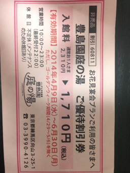

PARTICIPANTS:
DB ID: 281
Current name: Yuki Kugimiya
Address book name: Yuki Kugimiya
User name: yuki
Phone Number: 09047075368
Key: 090 4707 5368
DB ID: 0
Current name: You
Address book name: You
User name:
Phone Number:
Key:
Messages:
2014/02/08 22:58:28, "281:Yuki Kugimiya":
雪だねー！
2014/02/08 23:26:40, "281:Yuki Kugimiya":
風邪引かないように！
2014/02/09 08:33:32, "0:You":
うん！雪だ！
健康は大丈夫よ、いつもありがとう！
ゆきちゃんも元気？
2014/02/09 11:06:53, "281:Yuki Kugimiya":
うん。元気だよ！
雪、楽しいね！
2014/03/14 07:47:38, "281:Yuki Kugimiya":
toni 仕事辞めたの？
2014/03/14 07:58:50, "0:You":
うん！
アメリカに転職をしたいね
2014/03/14 07:59:16, "281:Yuki Kugimiya":
アメリカに行くの？
2014/03/14 08:00:13, "0:You":
土曜日からゲームのイベントがある。
そこから頑張るよ
2014/03/14 08:00:29, "281:Yuki Kugimiya":
アメリカで？
2014/03/14 08:00:52, "281:Yuki Kugimiya":
頑張ってね
2014/03/14 08:01:16, "281:Yuki Kugimiya":
なんか、寂しくなっちゃうね
2014/03/14 08:01:19, "0:You":
アメリカの他の国もありえるけどね〜
2014/03/14 08:04:05, "281:Yuki Kugimiya":
頑張って
2014/03/14 08:05:42, "281:Yuki Kugimiya":
日本から出た方がいいと思う
2014/03/14 08:11:23, "281:Yuki Kugimiya":
日本の仕事のシステムはおかしいからね
2014/03/14 08:12:11, "281:Yuki Kugimiya":
ただ、安全には気を付けてね
2014/03/14 08:33:03, "0:You":
ゆき！ゆきと離れちゃうのが寂しい
2014/03/14 09:04:27, "281:Yuki Kugimiya":
ありがとう。
私も寂しいよ
2014/03/14 09:18:19, "281:Yuki Kugimiya":
すぐ、アメリカに引っ越すの？
2014/03/14 09:19:48, "0:You":
いや、まだまだです。
まずは就活。
また、ビザは1年とかかかりそう。
2014/03/14 12:46:59, "281:Yuki Kugimiya":
そうなんだ
2014/03/16 10:15:42, "281:Yuki Kugimiya":
いつから、アメリカに行くの？
2014/03/16 10:16:28, "0:You":
今でしょう
2014/03/16 10:17:59, "281:Yuki Kugimiya":
アメリカにいるの？
2014/03/16 10:22:32, "0:You":
Yes
I missed this
2014/03/16 10:22:56, "0:You":
Gonna be back in Tokyo by Sunday
2014/03/16 10:23:46, "281:Yuki Kugimiya":
next sunday ?
2014/03/16 10:24:09, "281:Yuki Kugimiya":
i thought you will stay for a long time
2014/03/16 13:49:14, "281:Yuki Kugimiya":
hope u good luck
2014/03/16 14:34:05, "0:You":
tnx babe
2014/03/16 14:34:30, "0:You":
I'm on a business meeting
2014/03/16 15:25:28, "281:Yuki Kugimiya":
where ?
2014/03/16 15:25:42, "281:Yuki Kugimiya":
nice
2014/03/16 15:26:34, "0:You":
Seattle
The space nedle
2014/03/16 18:36:10, "281:Yuki Kugimiya":
toni you put on weight
2014/03/16 18:36:22, "281:Yuki Kugimiya":
?
2014/03/16 18:36:33, "281:Yuki Kugimiya":
i know him
2014/03/17 16:24:13, "281:Yuki Kugimiya":
とにかく元気そうだし
仕事とか人生がよい方向に向かってて良かった。
私も頑張ってるよー
2014/03/17 17:38:01, "0:You":
うん！
頑張って、ね！
また後
2014/03/17 22:38:50, "0:You":
All night coding again.
Haven't sleep in 3 days!
2014/03/17 22:57:09, "281:Yuki Kugimiya":
why?
2014/03/18 05:36:29, "0:You":
Gotta get our games demos playable
2014/03/18 07:28:07, "281:Yuki Kugimiya":
Congratulations !
now i understood what you were doing before .
2014/03/18 07:35:41, "0:You":
that's a normal size!!
2014/03/18 07:56:22, "281:Yuki Kugimiya":
I know I was in Hawaii just a few weeks ago .
2014/03/18 08:02:21, "281:Yuki Kugimiya":
Enjoy American food .
I miss it
2014/03/18 08:11:22, "0:You":
Yuki,
Stay beautiful, please.
2014/03/18 12:55:15, "281:Yuki Kugimiya":
of couse
2014/03/24 07:32:04, "281:Yuki Kugimiya":
backed to Tokyo ?
2014/03/24 07:33:37, "0:You":
I'll get there at 22:30 today
2014/03/24 07:34:40, "281:Yuki Kugimiya":
still in US ?
2014/03/24 07:41:28, "0:You":
Yes, I'm actually waiting for my flight.
2014/03/24 07:47:35, "0:You":
Did you miss me?
2014/03/24 08:13:03, "281:Yuki Kugimiya":
yes
2014/03/24 08:20:31, "281:Yuki Kugimiya":
なんか、遠い所に行ったと思ったら寂しいと思ったよ。
2014/03/24 08:20:41, "281:Yuki Kugimiya":
気を付けてね
2014/03/24 08:23:04, "0:You":
You're so sweet
2014/04/11 20:58:13, "0:You":
記念をおめでとう！
2014/04/11 20:59:33, "0:You":
一年間にいろいろあったね！
2014/04/11 21:02:09, "0:You":
覚えてる？
一年前、恵比寿で、初めて会って〜
2014/04/11 21:21:40, "281:Yuki Kugimiya":
その記念ね
2014/04/11 21:22:57, "0:You":
ゆきちゃん！
忘れないで。
君は大切な人だから
2014/04/11 21:25:36, "0:You":
デートをしましょ
2014/04/12 16:35:50, "0:You":
月曜日は暇？
恵比寿でディナーする？
2014/04/16 23:10:37, "0:You":
ゆきちゃん！
どうしたのよ？元気ないの？
2014/04/17 12:51:04, "281:Yuki Kugimiya":
元気よ
2014/04/17 13:16:29, "0:You":
None
2014/04/17 13:25:48, "281:Yuki Kugimiya":
ありがとう
2014/04/17 13:45:18, "0:You":
病院を変えたんでしょう？！
2014/04/17 13:47:31, "281:Yuki Kugimiya":
なんで？
2014/04/17 13:47:56, "281:Yuki Kugimiya":
変えてないけど
2014/04/17 13:48:49, "0:You":
みた病院の看護婦ちゃんとしゃべってたら
ゆきちゃんを知らないって言うってたの。
2014/04/17 13:51:16, "281:Yuki Kugimiya":
人数多いから
2014/04/17 13:58:11, "0:You":
そうか
そうか！
2014/05/13 07:48:07, "0:You":
Yukiちゃん、久しぶりに会いたい！
ちょうどお風呂の割引券をもらった。
今週末お風呂に行こうよ！
次の休みはいつですか？
2014/05/13 07:48:15, "0:You":
You sent a photo.
2014/05/15 08:06:43, "281:Yuki Kugimiya":
なんで、お風呂？
ごめん。行きたくない。
2014/05/15 08:08:40, "0:You":
OK
2014/05/15 08:13:31, "281:Yuki Kugimiya":
ご飯だったらいいけど。
2014/05/15 08:16:32, "0:You":
いいね！
Midtownのハバナカフェってまだ覚えてる？
http://s.tabelog.com/tokyo/A1307/A130701/13007089/
2014/05/15 08:18:07, "0:You":
月曜、仕事終わったら行く？
20:30がいい？
2014/05/15 12:47:42, "281:Yuki Kugimiya":
月曜日は休みです
2014/05/15 21:03:45, "0:You":
いいね！
2014/05/15 21:04:14, "0:You":
もっと早く行けたら連絡をします
2014/05/15 21:19:38, "281:Yuki Kugimiya":
他の日は？
2014/05/15 21:27:23, "0:You":
オー！
火曜日でもいい？
2014/05/15 23:16:58, "281:Yuki Kugimiya":
心身ともに成長した？
2014/05/15 23:48:50, "0:You":
うん！
2014/05/15 23:50:39, "281:Yuki Kugimiya":
何を学んだの？？
2014/05/15 23:54:37, "0:You":
なんか、いろいろ。
2014/05/16 09:31:57, "0:You":
ね！
明日も休み？
外でえんそくをしましょ！
2014/05/16 21:21:58, "281:Yuki Kugimiya":
明日は約束がある。
2014/05/16 21:29:45, "0:You":
OK
2014/05/17 13:21:56, "281:Yuki Kugimiya":
いい天気だね
2014/05/17 13:22:41, "0:You":
いいな！
出かけよよ！
夜暇？
2014/05/17 13:27:43, "281:Yuki Kugimiya":
今日は一日だめなの。
もう、夏だね！
2014/05/17 21:30:46, "0:You":
Good night, babe!
2014/05/20 07:18:00, "0:You":
ねね！
明日デートしよか？！
2014/05/20 08:03:38, "281:Yuki Kugimiya":
どうしたの？？
2014/05/20 08:28:50, "0:You":
大丈夫よ何も心配ことがない。
お久しぶり会ってみたい
2014/05/20 13:20:21, "281:Yuki Kugimiya":
今日なら
2014/05/20 14:19:40, "0:You":
oh!今日は予定入っている
2014/05/23 23:34:57, "0:You":
今なにしてるの？
2014/05/23 23:57:54, "281:Yuki Kugimiya":
今、お家に帰ってきた
2014/05/24 00:18:27, "0:You":
ゆきちゃんはいい女、やっぱり
2014/05/29 20:39:49, "281:Yuki Kugimiya":
スペイン語って難しいね。
2014/05/29 20:50:02, "0:You":
勉強をしてるんだ？！
英語と似てないですね〜
プライドレーゾンをしてあげるよ。
日曜日、暇？
六本木ミッドタウンでコーヒー飲む？
2014/05/29 21:10:43, "281:Yuki Kugimiya":
勉強はしてない。
今日、患者さんが来たから
2014/05/29 21:11:02, "281:Yuki Kugimiya":
トニー教えれないでしょ
2014/05/29 21:37:00, "0:You":
出来るかなー？
コーヒーは飲めるよ！
2014/05/29 21:38:00, "281:Yuki Kugimiya":
そうね、、
2014/05/29 21:57:56, "281:Yuki Kugimiya":
日曜日は代々木公園に行ってるかも
2014/06/14 21:07:27, "281:Yuki Kugimiya":
toni 元気？
スペイン負けちゃったね
2014/06/14 21:43:51, "0:You":
悲しい！
悲しい！
2014/06/14 21:50:25, "281:Yuki Kugimiya":
悲しまないで
2014/06/14 22:40:09, "0:You":
明日の日本が勝てるといいね
2014/06/15 07:09:43, "281:Yuki Kugimiya":
うん！
2014/08/18 11:34:43, "281:Yuki Kugimiya":
元気？
2014/08/18 12:18:52, "0:You":
うん！
元気だよ
元気？
今度ディナーしよか？
2014/08/18 12:41:08, "281:Yuki Kugimiya":
私も元気だよ。
そうだね、ご飯でも行こうか
2014/08/18 21:16:27, "0:You":
ゆきちゃん！
2014/08/18 22:34:23, "281:Yuki Kugimiya":
✋
2014/08/18 22:42:22, "0:You":
おやすみ！
2014/08/18 22:50:31, "281:Yuki Kugimiya":
おやすみ
2014/09/01 13:26:14, "0:You":
おはよう！
久しぶりだけど、
今週六本木でディナーをする？
明日ひま？
2014/09/01 19:37:40, "281:Yuki Kugimiya":
いいよ
2014/09/01 19:43:08, "0:You":
20:30にガウディを予約していい？
2014/09/01 20:29:58, "281:Yuki Kugimiya":
もう少し早い時間は無理？
2014/09/01 20:40:48, "0:You":
20時で頑張る。
どこの駅はゆきちゃんに一番近い？
2014/09/01 20:42:14, "281:Yuki Kugimiya":
五反田
2014/09/01 20:43:21, "0:You":
じゃ！五反田に行こう。
いい店があるの？
2014/09/01 20:44:13, "281:Yuki Kugimiya":
いっぱいあるよ
2014/09/01 20:45:01, "0:You":
ok決まった、ね！
2014/09/01 20:50:13, "281:Yuki Kugimiya":
何時？
2014/09/01 22:35:53, "0:You":
20:15で
2014/09/02 10:09:56, "0:You":
おはよう！
なるはや仕事を終わらせて来ます。
ゆきちゃんも仕事を頑張って、ね！
2014/09/02 19:37:50, "0:You":
20:12に五反田に着きます
--- from 駅すぱあと ---
2014/09/02 19:49:20, "281:Yuki Kugimiya":
ok
2014/09/02 20:14:26, "0:You":
着いた
2014/09/02 23:00:35, "0:You":
おやすみ！
2014/09/02 23:09:56, "281:Yuki Kugimiya":
good night
2014/09/02 23:54:47, "0:You":
えんどうちゃんは3階にいるって、面倒をみてあげてね！
I wish we could have something more going between us, but you don't have the same passion you had before.
2014/09/03 13:49:48, "281:Yuki Kugimiya":
トニーのこと信用できないからね！
2014/09/03 14:24:53, "0:You":
I got no STD
Believe me baby.
2014/09/03 14:27:04, "281:Yuki Kugimiya":
検査もしてないのに何で分かるの？
それにそれだけじゃないから、トニーを信用できないのは
2014/09/03 14:31:11, "0:You":
とにかく、デートとかセックスをしましょ。
それで信用が生まれて来る。
2014/09/03 16:27:56, "0:You":
月曜晩、暇？
2014/09/03 18:11:53, "0:You":
ゆきちゃん！
どうしたらいいの？
2014/09/03 18:14:35, "281:Yuki Kugimiya":
何を？
2014/09/03 18:30:46, "0:You":
ゆきちゃんをどう扱ったらいいでしょうか？
説明書ある？
2014/09/03 19:08:40, "281:Yuki Kugimiya":
どうしたいの？
2014/09/03 19:22:20, "0:You":
この会話がアホらしい。
2014/09/03 19:30:14, "281:Yuki Kugimiya":
やっぱりトニーとは話にならないね
2014/09/03 19:30:46, "281:Yuki Kugimiya":
アホな質問してきた人は誰？
2014/09/03 19:32:05, "281:Yuki Kugimiya":
親切に答えてあげたのにね
2014/09/03 20:14:13, "0:You":
結局…
月曜晩、暇？
2014/09/03 20:16:10, "281:Yuki Kugimiya":
土曜日にならないと分からない
2014/09/03 20:17:16, "0:You":
okじゃ！また来週遊ぼう
2014/09/03 23:24:50, "281:Yuki Kugimiya":
good night
2014/09/03 23:25:18, "0:You":
Good night
2014/09/07 20:04:59, "281:Yuki Kugimiya":
やっぱり月曜日は忙しいです。
2014/09/07 20:25:16, "0:You":
そうか、そうか？！
また、平日でも五反田で会おう、ね！
2014/09/07 20:30:47, "281:Yuki Kugimiya":
平日?五反田？
2014/09/07 21:18:29, "0:You":
そう、そう！
またデートをしよ！
2014/09/08 12:43:49, "281:Yuki Kugimiya":
じゃあ、お肉でも食べに行こうか？
2014/09/08 14:58:58, "0:You":
明日行く？
ゆきちゃんが作る、それとも外食？
2014/09/08 18:59:23, "281:Yuki Kugimiya":
明日いいよ。
ただ、渋谷に行く用事があるから、渋谷でいい？
2014/09/08 19:00:26, "0:You":
うん！
2014/09/09 09:30:03, "0:You":
おはようございます！
よく寝た？
2014/09/09 09:53:47, "0:You":
久しぶり缶コーヒーを飲んだらまずかった
2014/09/09 13:13:56, "281:Yuki Kugimiya":
おはよう
2014/09/09 13:46:51, "0:You":
今日８じでいい？
2014/09/09 17:57:53, "281:Yuki Kugimiya":
ok
2014/09/09 19:38:10, "0:You":
20:03に渋谷に着きます
--- from 駅すぱあと ---
2014/09/09 19:44:45, "281:Yuki Kugimiya":
ok
2014/09/09 19:47:42, "281:Yuki Kugimiya":
ハチ公の前で
2014/09/09 19:51:35, "0:You":
2014/09/12 19:20:19, "281:Yuki Kugimiya":
ゲームショー来週だよ。
2014/09/12 19:21:11, "0:You":
そう、そう！
忙しくなっちう
2014/09/12 20:16:14, "281:Yuki Kugimiya":
今週って言ってたから
2014/09/12 20:16:36, "281:Yuki Kugimiya":
間違えてると思ってた
2014/09/12 20:48:44, "0:You":
行きたいでしょう？
チケットあげるよ
2014/09/12 23:47:51, "281:Yuki Kugimiya":
ありがとう
2014/09/16 15:05:50, "0:You":
地震があった、ね！大丈夫？！
2014/09/16 18:39:42, "281:Yuki Kugimiya":
病院にいたから、大丈夫！
でも、怖いね。
トニーは大丈夫だよね！
2014/09/16 18:41:14, "0:You":
大丈夫でよかった！
今日一人で寝れる？
私が行った方がいい？
2014/09/16 18:44:15, "281:Yuki Kugimiya":
夜に地震がこないことを祈る！
2014/09/16 18:46:58, "0:You":
心配ので一緒に寝ましょ。
何か作ってくれる？
2014/09/16 18:52:09, "281:Yuki Kugimiya":
私のお家狭いから、寝れない
2014/09/16 18:54:21, "0:You":
大丈夫、大丈夫！
えんりょうをしなくてもいいよ
2014/09/16 18:54:53, "281:Yuki Kugimiya":
遠慮してないけど
2014/09/16 18:55:23, "0:You":
狭くてもいいよ〜
来ていいの？！
2014/09/16 18:56:54, "281:Yuki Kugimiya":
突然は困る
2014/09/16 18:59:30, "0:You":
じゃ！また呼んで、ね！
2014/09/16 19:05:17, "281:Yuki Kugimiya":
心配してくれて？ありがとう
2014/09/16 19:09:41, "0:You":
おやすみ！
2014/09/16 19:37:35, "281:Yuki Kugimiya":
おやすみ
2014/09/19 10:26:46, "0:You":
ゆきちゃんと遊びたい
2014/09/19 18:22:12, "281:Yuki Kugimiya":
遊ぶ？
2014/09/19 18:32:57, "0:You":
家でゴロンゴロンしよう！
日曜日、暇？
2014/09/19 18:33:52, "281:Yuki Kugimiya":
日曜日、夕方から仕事！
2014/09/19 18:36:08, "0:You":
仕事だ！
残念！
2014/09/19 18:37:51, "281:Yuki Kugimiya":
仕事辞めたい
2014/09/19 18:38:32, "281:Yuki Kugimiya":
頑張ってるけどね
2014/09/19 18:44:27, "0:You":
そうか、そうか！
大変でしょうね。
やっぱ、日曜朝に遊びに行った方がいいかも。
2014/09/19 18:45:28, "281:Yuki Kugimiya":
どこに？
2014/09/19 18:46:06, "281:Yuki Kugimiya":
どこに？
2014/09/19 18:53:41, "0:You":
ゆきちゃんの家でいいですか？
2014/09/19 18:56:13, "281:Yuki Kugimiya":
お家じゃなんの気分転換にもならない
2014/09/19 19:09:47, "0:You":
気分転換を任せて…
気持ち良くしてあげるよ
2014/09/19 22:10:01, "281:Yuki Kugimiya":
どうかな
2014/09/19 22:10:38, "0:You":
よろこんで！
2014/09/19 22:11:57, "281:Yuki Kugimiya":
トニーて自由でいいよn
2014/09/19 22:12:01, "281:Yuki Kugimiya":
ね
2014/09/19 22:40:08, "281:Yuki Kugimiya":
トニーは悩んだりしたことある？
2014/09/20 00:03:13, "0:You":
日曜いっぱい話しましょう
2014/09/20 10:41:14, "0:You":
明日は何時起きるの？
2014/09/20 12:13:44, "281:Yuki Kugimiya":
外行こうよ
2014/09/20 12:37:24, "0:You":
分かった
2014/09/20 15:40:54, "0:You":
明日の朝渋谷でビリヤード？
2014/09/20 19:03:04, "281:Yuki Kugimiya":
朝から？
2014/09/20 19:03:25, "281:Yuki Kugimiya":
昼過ぎに出てランチとか？
2014/09/20 19:03:51, "0:You":
それでもいいよ
2014/09/20 19:04:21, "281:Yuki Kugimiya":
ok
2014/09/20 19:15:39, "281:Yuki Kugimiya":
水族館行きたい？
2014/09/20 19:16:54, "0:You":
いいよ
2014/09/20 19:17:33, "0:You":
一緒に寝てて朝ごはんでパンケーキを作りたい？
2014/09/20 19:17:35, "281:Yuki Kugimiya":
トニー魚とか興味あるの？
2014/09/20 19:18:11, "0:You":
マンボが好き
2014/09/20 19:18:31, "281:Yuki Kugimiya":
品川水族館にいるかな？
2014/09/20 19:19:00, "281:Yuki Kugimiya":
行ってみる？
2014/09/20 19:35:54, "0:You":
行こう！行こう！
2014/09/20 20:57:29, "0:You":
これはゆきちゃんに似合うかも
小嶋陽菜さんがセクシー＆キュートな「セーラームーン」に変身♡[Antenna]
https://antenna.jp/sns?id=636895&utm_source=line_app
2014/09/20 21:09:55, "0:You":
明日は品川駅前でいいよ。
何時がいい？
2014/09/20 22:33:09, "281:Yuki Kugimiya":
12時？
又、明日連絡します
2014/09/20 22:36:35, "0:You":
okまた明日！
2014/09/21 09:13:48, "0:You":
Yuki, get up!
Today is a beautiful day,
And we have a date!
2014/09/21 09:43:12, "281:Yuki Kugimiya":
起きてるよ！
2014/09/21 09:43:29, "281:Yuki Kugimiya":
12時に品川駅ね
2014/09/21 10:49:39, "0:You":
はい
2014/09/21 11:21:53, "0:You":
11:54に品川に着きます
--- from 駅すぱあと ---
2014/09/21 11:49:13, "281:Yuki Kugimiya":
ごめん。
ちょっと遅れます
2014/09/21 11:55:10, "0:You":
2014/09/21 12:07:15, "0:You":
マックドナルドで待ってるよ
2014/09/21 12:10:23, "281:Yuki Kugimiya":
ok
2014/09/21 12:10:37, "281:Yuki Kugimiya":
高輪口の？
2014/09/21 12:10:42, "281:Yuki Kugimiya":
今ついた
2014/09/21 12:11:03, "0:You":
うん！
来て
2014/09/21 23:23:07, "0:You":
今日ありがとう、ね！
またデートしましょう
2014/09/22 08:57:44, "281:Yuki Kugimiya":
ありがとね
2014/09/22 08:58:07, "281:Yuki Kugimiya":
2時からずっと仕事してて、疲れた
2014/09/22 08:58:18, "281:Yuki Kugimiya":
これから、帰る！
2014/09/22 08:59:49, "0:You":
ヤバイ
体力を使いきたんですよ、ね。
お疲れさま
2014/09/22 09:01:24, "281:Yuki Kugimiya":
昨日病院で何したの？
2014/09/22 09:02:52, "0:You":
ドクターの服を来ていろなところで写真を撮って
2014/09/22 09:03:26, "281:Yuki Kugimiya":
何で、トニーが？
2014/09/22 09:04:11, "0:You":
外人のドクターの代表だから、ね！
2014/09/22 20:00:53, "281:Yuki Kugimiya":
お買い物したい？
2014/09/22 20:02:45, "0:You":
分かんないけど〜
2014/09/22 20:04:33, "281:Yuki Kugimiya":
ok
2014/09/22 20:41:39, "0:You":
ゆきちゃん！
2014/09/22 20:41:56, "0:You":
また遊ぼう！
2014/09/22 20:47:18, "281:Yuki Kugimiya":
相変わらず軽いね
2014/09/22 20:48:10, "0:You":
ね、ね！
今日まだ食べてないよ
何か作ってくれる？
2014/09/22 20:54:37, "281:Yuki Kugimiya":
いっぱい作ったけど、友達ともう食べちゃたよー
2014/09/22 20:55:15, "0:You":
オー！うらやましい
2014/09/22 20:56:55, "281:Yuki Kugimiya":
でしょー
2014/09/22 21:53:50, "281:Yuki Kugimiya":
今度、美味しいご飯作ってあげる
2014/09/23 15:07:58, "281:Yuki Kugimiya":
今日の夜暇？？
2014/09/23 16:11:35, "0:You":
オー！いいかも！
夜五反田で寝てていい？
2014/09/23 17:06:05, "281:Yuki Kugimiya":
今、どこにいる？
2014/09/23 17:47:52, "281:Yuki Kugimiya":
銀座に来ない？
2014/09/23 19:59:55, "0:You":
ごめん！寝ちゃた
今新宿ですよ
2014/09/23 20:01:38, "281:Yuki Kugimiya":
何してたの？
2014/09/23 20:02:57, "0:You":
今日はスペイン大使館でいろいろ申し込んで疲れたん
2014/09/23 20:03:26, "0:You":
家に帰ったらずっと寝た
2014/09/23 20:03:48, "281:Yuki Kugimiya":
何を申し込んだの？
2014/09/23 20:04:20, "281:Yuki Kugimiya":
お疲れ様
2014/09/23 20:13:57, "0:You":
住所の変更とか〜
も帰った？
2014/09/23 20:16:07, "281:Yuki Kugimiya":
まだ、外
2014/09/23 20:28:15, "0:You":
そうか？！
楽しんで！
2014/09/23 21:54:58, "281:Yuki Kugimiya":
スペイン大使館は日本の祝日関係ないの？
2014/09/23 21:55:30, "0:You":
開いてたよ
2014/09/23 21:57:12, "281:Yuki Kugimiya":
そうだよね
2014/09/23 21:57:51, "281:Yuki Kugimiya":
ご飯食べた？
2014/09/23 21:58:51, "0:You":
うん！今日はも弁当を食べた。
映画を見て寝る。
2014/09/23 21:59:23, "281:Yuki Kugimiya":
ずっと寝てたのに寝れる？
2014/09/23 22:25:17, "0:You":
うん！
本当は、朝までゆきちゃんとセックスをしたい。
2014/09/23 22:27:11, "281:Yuki Kugimiya":
トニーはsex依存症？
2014/09/23 22:50:27, "0:You":
明日は泊まりに行っていい？
2014/09/24 20:32:44, "281:Yuki Kugimiya":
クラミジアに感染したって、なんで分かったの？
2014/09/24 21:50:44, "0:You":
金玉かゆかった。
2014/09/24 22:04:31, "281:Yuki Kugimiya":
いつの話？
2014/09/24 22:05:26, "281:Yuki Kugimiya":
症状でて、気づいたの？
2014/09/24 22:09:52, "281:Yuki Kugimiya":
心配してるのよ
2014/09/24 22:41:56, "0:You":
うん！
昔のことだから、も大丈夫だよ
2014/09/24 22:47:21, "281:Yuki Kugimiya":
そんなに昔じゃないでしょ？
2014/09/24 22:48:06, "281:Yuki Kugimiya":
勉強したんだ。
2014/09/24 22:48:14, "0:You":
半年は立てる
2014/09/24 22:48:30, "0:You":
治ってるよ
2014/09/24 22:48:39, "281:Yuki Kugimiya":
半年？
2014/09/24 22:49:01, "0:You":
薬で治してまた検査をした
2014/09/24 22:49:46, "281:Yuki Kugimiya":
性器だけじゃなくて、口の中の検査もした？
2014/09/24 23:40:19, "0:You":
おしっこの検査と血の検査
2014/09/24 23:40:38, "0:You":
も寝るよ
おやすみ
2014/09/25 07:44:15, "281:Yuki Kugimiya":
口の中も調べた方がいい。
まだ、治ってないかもね
2014/09/25 09:26:05, "0:You":
お酒いっぱい飲んでるからしょうどくをされてると思う
2014/09/25 18:09:20, "281:Yuki Kugimiya":
治っているといいね
2014/09/25 18:12:00, "0:You":
大丈夫よ。
エッチたっぷりしよ！
2014/09/25 19:47:05, "281:Yuki Kugimiya":
今度は水族館行きたい？
2014/09/25 19:50:52, "0:You":
いいけど〜
2014/09/25 19:51:09, "0:You":
魚とセックスをしていい？
2014/09/25 19:51:53, "281:Yuki Kugimiya":
~の意味なに？
2014/09/25 19:52:13, "281:Yuki Kugimiya":
魚として、して
2014/09/25 19:53:23, "0:You":
じゃ行こう！
2014/09/25 22:03:05, "0:You":
明日ゆきちゃんのところで泊まっていい？
2014/09/26 18:01:00, "281:Yuki Kugimiya":
ごめん、今日は飲み会なの
2014/09/26 18:02:57, "0:You":
会いたかったのに〜
また今度、ね！
2014/09/26 19:42:04, "0:You":
カラオケの意味は空のオーケストラですって。
オーケストラなしで歌う。
2014/09/26 19:46:43, "0:You":
感動した。
すごいでしょう？！
2014/09/26 22:38:46, "281:Yuki Kugimiya":
うん
2014/09/27 18:48:46, "281:Yuki Kugimiya":
また、お肉食べに行こうね
2014/09/27 18:52:55, "0:You":
行こう、行こう！
2014/09/27 19:01:39, "281:Yuki Kugimiya":
2014/09/28 23:28:38, "281:Yuki Kugimiya":
火曜日、ご飯行かない？
2014/09/28 23:36:32, "0:You":
火曜日はクルーズの人と飲み会があって。
明日は暇？
2014/09/28 23:36:45, "0:You":
ブライアンを覚えてる？
2014/09/28 23:38:08, "281:Yuki Kugimiya":
覚えてるよ
2014/09/28 23:39:47, "0:You":
明日19時に
ブライアンとゆかりちゃんとLAVへ行く。
ゆきちゃんも行く？
2014/09/28 23:40:48, "281:Yuki Kugimiya":
ゆかりって誰
2014/09/28 23:41:26, "281:Yuki Kugimiya":
ブライアンには会いたいけどね
2014/09/28 23:41:34, "0:You":
21才の前彼女です
2014/09/28 23:41:51, "281:Yuki Kugimiya":
まだ、会ってるんだ
2014/09/28 23:42:16, "281:Yuki Kugimiya":
また、付き合えば？
2014/09/28 23:44:11, "0:You":
親子だね〜
自分の娘と付き合えない
2014/09/28 23:45:38, "281:Yuki Kugimiya":
sexしてたんでしょ？
親子になれるの？？
2014/09/28 23:46:17, "0:You":
今の話しの流れはよろしくない
2014/09/28 23:47:32, "0:You":
今日はこの辺にしておきましょう。
おやすみ！
2014/09/28 23:48:51, "281:Yuki Kugimiya":
まあ、どうでもいいや
2014/09/28 23:54:32, "0:You":
ゆきちゃんはゆかりちゃんと会いたくないんですね。
明日は行きたい？
2014/09/28 23:55:14, "281:Yuki Kugimiya":
だって、STD になったこでしょ？
2014/09/28 23:57:23, "0:You":
分かった〜
ゆきちゃんと別の日でブライアンと会わせる
2014/09/28 23:59:02, "281:Yuki Kugimiya":
お気遣いありがとうございます。でも、会わなくていいかな
2014/09/29 00:01:28, "0:You":
オー！
別件だけど、
私とゆきちゃんとデートをしていいの？
2014/09/29 00:02:00, "281:Yuki Kugimiya":
どういう意味？
2014/09/29 00:06:38, "281:Yuki Kugimiya":
I can't understand your question
2014/09/29 00:11:09, "0:You":
そうか、そうか？！
違う日ゆきちゃんとデートをしていい？
2014/09/29 00:20:22, "281:Yuki Kugimiya":
もう、会わない方がいいかもね
2014/09/29 10:25:32, "0:You":
OK
2014/09/29 12:20:16, "281:Yuki Kugimiya":
ok なのね
2014/09/29 15:47:33, "281:Yuki Kugimiya":
ごめん、昨日はいっぱいお酒を飲んでた
2014/09/29 15:48:52, "0:You":
そうか、そうっか？！
じゃ、昨日の話を無視する、ね！
2014/10/01 22:39:28, "281:Yuki Kugimiya":
うん
2014/10/01 23:19:11, "0:You":
Yuki!
2014/10/02 07:39:11, "281:Yuki Kugimiya":
おはよう
2014/10/02 07:39:38, "0:You":
おはよう！
よく寝た？
2014/10/02 07:39:56, "281:Yuki Kugimiya":
うん。
トニーは？
2014/10/02 07:41:13, "0:You":
悪くないけど
ゆきちゃんと一緒に寝たい
2014/10/02 07:43:10, "281:Yuki Kugimiya":
寒くなってきたもんね
2014/10/02 07:43:52, "0:You":
そう、そう！
2014/10/02 07:44:46, "281:Yuki Kugimiya":
じゃあ、今度一緒に寝ようか？
トニーがいい子にしてたら
2014/10/02 07:45:19, "0:You":
イエーイ！
今夜？！
2014/10/02 07:48:01, "281:Yuki Kugimiya":
明日？
2014/10/02 07:50:46, "0:You":
うん！
明日は仕事の食事会がある。
ちょっと遅くなるかも。
2014/10/02 07:51:55, "281:Yuki Kugimiya":
私、土曜日仕事なの
じゃあ、違う日がいいかな
2014/10/02 07:52:54, "0:You":
月曜日は？
2014/10/02 07:54:18, "281:Yuki Kugimiya":
月曜日は病院のドクターたちとの、飲み会。
2014/10/02 07:55:31, "281:Yuki Kugimiya":
週末は忙しいんだね
2014/10/02 07:55:41, "0:You":
じゃ、水曜の8日
2014/10/02 07:57:07, "281:Yuki Kugimiya":
週末は何するの？
2014/10/02 07:58:48, "0:You":
土曜日はさらちゃんと英会話。
日曜日は空いてる
2014/10/02 07:59:46, "281:Yuki Kugimiya":
そういえば、土曜日英会話って言ってたね
2014/10/02 08:01:03, "0:You":
うん！来る？
2014/10/02 08:02:26, "281:Yuki Kugimiya":
恵比寿？
2014/10/02 08:02:35, "281:Yuki Kugimiya":
誰が来るの？
2014/10/02 08:04:04, "0:You":
まだ誰も誘ってない。
さらちゃんと私。
ブライアンとか呼んでみたい。
2014/10/02 08:05:41, "281:Yuki Kugimiya":
ブライアンもう帰るんじゃない？
2014/10/02 08:06:13, "281:Yuki Kugimiya":
トニーだけじゃ、スペイン語教室じゃん
2014/10/02 08:06:33, "0:You":
そうか？！
じゃ違う外人を呼びます
2014/10/02 08:07:02, "281:Yuki Kugimiya":
何時頃？
2014/10/02 08:07:26, "0:You":
16時
2014/10/02 08:08:01, "281:Yuki Kugimiya":
早い。私、BLSの勉強が夕方ある
2014/10/02 08:08:30, "281:Yuki Kugimiya":
行けたら行きたいけど、7時過ぎになる
2014/10/02 08:08:57, "281:Yuki Kugimiya":
病院についた。またね
2014/10/02 08:09:08, "0:You":
またね！
2014/10/03 11:31:18, "0:You":
明日はLAVに行こうか？
2014/10/03 12:24:10, "281:Yuki Kugimiya":
7時以降になっちゃうけど。
誰か来れるようになったの？
2014/10/03 12:24:21, "281:Yuki Kugimiya":
Lavなの？
2014/10/03 13:29:13, "0:You":
まだ人を呼んでない
外人の男子を入れようかな〜
2014/10/03 14:17:42, "281:Yuki Kugimiya":
Lav 以外は？
2014/10/03 14:23:58, "0:You":
横浜のオクトーバーフェスト行こう！
2014/10/03 14:24:04, "0:You":
明日
2014/10/03 14:34:33, "281:Yuki Kugimiya":
明日、仕事だよ
2014/10/03 16:51:45, "0:You":
あの、ね〜
まだ連絡待ちだけどう
明日は多分17:30からオクトーバーフェストになるかも。
2014/10/03 17:48:58, "281:Yuki Kugimiya":
そっか、残念
楽しんできて！
2014/10/03 17:51:41, "0:You":
まだ決まってないけど〜
オクトーバーフェストだったら１９時以降に来てっていいよ
2014/10/03 17:51:50, "0:You":
仕事終わったら
2014/10/03 17:52:31, "281:Yuki Kugimiya":
横浜だよね？
2014/10/03 17:52:40, "0:You":
si
2014/10/03 17:52:54, "281:Yuki Kugimiya":
多分、つく頃に終わってるかも
2014/10/03 17:53:37, "0:You":
じゃダメだね〜
2014/10/03 18:02:41, "281:Yuki Kugimiya":
うん
2014/10/04 18:49:07, "281:Yuki Kugimiya":
オクトーバフェス？
2014/10/04 19:24:03, "0:You":
I'm at Ebisu now
Remember what a dickens?
2014/10/04 19:24:54, "281:Yuki Kugimiya":
恵比寿になってたんだ
2014/10/04 19:25:27, "0:You":
Come and join us
2014/10/04 19:25:43, "281:Yuki Kugimiya":
誰といるの
2014/10/04 19:27:08, "0:You":
Seva & Sara
2014/10/04 19:27:29, "281:Yuki Kugimiya":
英語の勉強してる？
2014/10/04 19:29:17, "0:You":
Just chatting
2014/10/04 19:29:44, "281:Yuki Kugimiya":
ok
2014/10/04 19:30:14, "0:You":
I miss you
2014/10/04 19:30:25, "281:Yuki Kugimiya":
I've just finished work
2014/10/04 19:31:31, "281:Yuki Kugimiya":
walking around Roppongi ,
2014/10/04 19:33:45, "281:Yuki Kugimiya":
Im coming
2014/10/04 19:34:16, "0:You":
Yeah!
2014/10/04 19:35:14, "281:Yuki Kugimiya":
So don't move from there , okay ?
2014/10/04 19:35:38, "0:You":
Ok
I wait
2014/10/04 23:29:13, "281:Yuki Kugimiya":
トニー
2014/10/04 23:33:29, "0:You":
ゆき！
2014/10/04 23:34:17, "281:Yuki Kugimiya":
トニーは私のこと好きだった？
2014/10/04 23:40:15, "0:You":
好きだった。
自分の中にはいろんなトラウマや勘違いがあったからすぐgive up をしっちゃいました。
2014/10/04 23:46:29, "281:Yuki Kugimiya":
そうだよね
2014/10/04 23:51:44, "281:Yuki Kugimiya":
明日、台風だよ
2014/10/05 00:00:35, "0:You":
うん！気をつけて。
2014/10/05 00:15:19, "281:Yuki Kugimiya":
トニーもね
2014/10/05 00:17:10, "281:Yuki Kugimiya":
台風すごかったら、助けにきてくれる？
2014/10/05 00:17:42, "0:You":
うん！行く！
2014/10/05 00:19:07, "281:Yuki Kugimiya":
ありがとう
2014/10/05 00:20:34, "281:Yuki Kugimiya":
じゃあ、お礼にご飯つくるね
2014/10/05 00:21:40, "0:You":
オー！いいですね
2014/10/05 00:24:20, "281:Yuki Kugimiya":
I wanted you to see only me when we had a relationship..
2014/10/05 00:37:34, "281:Yuki Kugimiya":
good night !
2014/10/05 11:43:37, "281:Yuki Kugimiya":
病院のテレビがうつらないんだけど、トニーの家のテレビうつる？
2014/10/05 12:20:54, "281:Yuki Kugimiya":
今日、夜ご飯一緒に食べる？
2014/10/05 13:59:44, "0:You":
テレビあるよ。
台風だから外食をやめた方がいいかも
2014/10/05 17:42:03, "281:Yuki Kugimiya":
そうだよね。
うちにきてもいいけど、雨すごいから外でない方がいいね。
2014/10/05 17:43:26, "281:Yuki Kugimiya":
やっと仕事終わった！
これから帰ります
2014/10/05 17:44:01, "0:You":
ありがとう！
今日は予定が入ってるけど
その後、行けたら行く
2014/10/05 17:50:35, "281:Yuki Kugimiya":
私との外食断ったのに、外出るんだね
2014/10/05 18:04:01, "281:Yuki Kugimiya":
しょうがないか
2014/10/05 18:16:10, "0:You":
仕事のミーティングなの、新しいゲームのためのデザイナーさんを募集ですね
2014/10/05 18:17:37, "281:Yuki Kugimiya":
今日は日曜日だよ
2014/10/05 18:17:45, "281:Yuki Kugimiya":
仕事なの？
2014/10/05 18:18:17, "281:Yuki Kugimiya":
いいデザイナー見つかるといいね
2014/10/05 18:26:51, "0:You":
今日はやめて
明日にしましょうか？
2014/10/05 19:35:38, "281:Yuki Kugimiya":
うん
2014/10/05 19:37:44, "281:Yuki Kugimiya":
雨、どんどんひどくなるから早めにお家に帰ってね
2014/10/05 19:37:52, "281:Yuki Kugimiya":
Take care
2014/10/05 22:42:29, "0:You":
You too.
また明日！
2014/10/06 10:09:35, "0:You":
おはよう！
2014/10/06 10:10:03, "0:You":
今日はさみしいから一緒に寝ていい？
2014/10/06 13:16:34, "281:Yuki Kugimiya":
今日は飲み会だった。
2014/10/06 13:29:01, "0:You":
明日にしましょうか？
2014/10/06 17:53:44, "0:You":
ごめん！
明日またミーティングだ。
明後日にしましょう。
2014/10/07 07:39:39, "281:Yuki Kugimiya":
じゃあ、トニーのお家に行こうかな
2014/10/07 08:00:38, "0:You":
明日まで待てて。
きれいなゆきちゃんにはウチのベッドには寝させない。
2014/10/07 08:05:06, "281:Yuki Kugimiya":
トニーも汚ない？
2014/10/07 08:39:13, "0:You":
トニーはきれい、きれい。
超きれい。
2014/10/07 11:58:29, "0:You":
やっぱ、今日会いたいからミーティングの後に五反田へ行っていい？
2014/10/07 12:52:09, "281:Yuki Kugimiya":
風邪でダウンしてる
2014/10/07 14:06:29, "0:You":
心配だね〜
最近エボラがはやってるから
死ぬなら私と一緒に死んでください
2014/10/07 18:05:01, "281:Yuki Kugimiya":
トニーと会った後からのどが痛くなった。
トニーは大丈夫？
2014/10/07 18:10:44, "0:You":
大丈夫です。
多分、トニーとセックスをすればなおるよ。
やってみる？
2014/10/07 18:13:30, "281:Yuki Kugimiya":
sexしたいだけだったら、他でして
2014/10/07 18:14:15, "0:You":
マジか？！
ゆきちゃんがすぐ怒っちゃう〜
2014/10/07 18:14:37, "281:Yuki Kugimiya":
バカにしないで
2014/10/07 18:15:04, "281:Yuki Kugimiya":
真面目に話ができない人は必要ない
2014/10/07 18:17:59, "0:You":
話しがかわるですけどう
一人で寂しい？
面倒をしに行ったほうがいい？
2014/10/07 18:18:46, "281:Yuki Kugimiya":
大丈夫。クスリ飲んで今日は早くねる。
ありがとう
2014/10/08 10:30:46, "0:You":
おはよう！
2014/10/08 11:39:59, "281:Yuki Kugimiya":
Buenos dias !
2014/10/08 18:16:34, "281:Yuki Kugimiya":
Look at the moon
2014/10/08 18:16:48, "0:You":
oh!
2014/10/08 18:48:49, "281:Yuki Kugimiya":
again
2014/10/08 18:54:20, "0:You":
eclipse
2014/10/08 18:56:30, "281:Yuki Kugimiya":
yes
2014/10/08 18:56:50, "0:You":
make a wish!
2014/10/08 18:57:28, "281:Yuki Kugimiya":
really ?
2014/10/08 18:58:02, "281:Yuki Kugimiya":
wish comes true ?
2014/10/08 19:02:58, "0:You":
not sure... this is not exactly a shooting star
2014/10/08 19:54:48, "0:You":
Looks red now
2014/10/08 19:55:36, "0:You":
Did you wish for changing the color of the moon?
2014/10/08 20:14:13, "281:Yuki Kugimiya":
Yes , I did !
2014/10/08 20:22:20, "281:Yuki Kugimiya":
but I couldn't see the red moon
2014/10/08 20:25:34, "0:You":
Ooh! Watta pitty
2014/10/08 20:58:16, "281:Yuki Kugimiya":
2014/10/08 21:00:13, "0:You":
Do you need me to cuddle you?
I can go on Friday
2014/10/08 21:17:01, "281:Yuki Kugimiya":
tomorrow ?
2014/10/08 21:18:09, "0:You":
I'm busy tomorrow.
金曜日は？
2014/10/08 21:22:27, "281:Yuki Kugimiya":
are u off on Saturday ?
2014/10/08 21:23:34, "0:You":
I gotta go to my boss BBQ Saturday at 12h
2014/10/08 21:24:33, "281:Yuki Kugimiya":
can i go with u ?
2014/10/08 21:27:04, "0:You":
It's kinda complicated.
It's at my boss home, and they invited too much people.
Besides, I'll be all the time serving drinks and roasting meet.
2014/10/08 21:28:13, "281:Yuki Kugimiya":
Im kidding .
I have to work on Satuday
2014/10/08 21:29:21, "0:You":
We can have sex all night, and go to work in the morning
2014/10/08 21:30:15, "281:Yuki Kugimiya":
I thought you are off on Saturday but I will wake u up early cos my job
2014/10/08 21:30:34, "0:You":
No problem
2014/10/08 21:31:37, "281:Yuki Kugimiya":
why you want to have sex with me ? just fun ?
2014/10/08 21:32:22, "0:You":
I'm not answering that question.
2014/10/08 21:32:52, "281:Yuki Kugimiya":
why ?
2014/10/08 21:33:49, "0:You":
You have so many sexual issues.
That bothers a lot.
2014/10/08 21:34:17, "281:Yuki Kugimiya":
I am serious .
2014/10/08 21:35:47, "281:Yuki Kugimiya":
I am not like your exgirlfriends . I don't wanna have free sex with boys .
2014/10/08 21:36:05, "281:Yuki Kugimiya":
i just have sex only boyfriend
2014/10/08 21:40:23, "281:Yuki Kugimiya":
I have got a problem by sex from you , as you know .
you shouldn't forget it !
2014/10/08 21:44:06, "0:You":
Girl!
If I need to beg you everyday to have sex... I better give up now.
You use sex to control me, and it's not gonna work.
2014/10/08 21:44:57, "281:Yuki Kugimiya":
that's why I asked you
2014/10/08 21:45:14, "281:Yuki Kugimiya":
why you want to have sex with me ?
2014/10/08 21:45:19, "281:Yuki Kugimiya":
just fun ?
2014/10/08 21:45:55, "0:You":
I like you.
That's why.
2014/10/08 21:47:27, "281:Yuki Kugimiya":
I really don't know what your mind ..
I just care by myself .
i want you to be more serious .
2014/10/08 21:47:50, "281:Yuki Kugimiya":
tell your mind , don't hide plz
2014/10/08 21:48:10, "281:Yuki Kugimiya":
I mean usually
2014/10/08 21:52:07, "281:Yuki Kugimiya":
i don't wanna beg you to have sex . I just wanna try to trust you , that it
2014/10/08 21:52:57, "281:Yuki Kugimiya":
want you to*
2014/10/08 21:53:20, "281:Yuki Kugimiya":
and no need ague
2014/10/08 21:53:47, "281:Yuki Kugimiya":
between us
2014/10/08 21:54:05, "281:Yuki Kugimiya":
just wanna relax
2014/10/08 21:56:15, "0:You":
Let's relax, then.
Let's have casual dates and some sex.
You'll be happier and healthier.
2014/10/08 21:57:24, "281:Yuki Kugimiya":
Do u have sex friends right now ?
2014/10/08 21:58:45, "0:You":
No, I don't
2014/10/08 21:59:04, "281:Yuki Kugimiya":
sure ?
2014/10/08 22:00:04, "281:Yuki Kugimiya":
i believe you .
2014/10/08 22:02:18, "281:Yuki Kugimiya":
仕事お疲れ様
2014/10/08 22:02:21, "281:Yuki Kugimiya":
おやすみ
2014/10/08 22:21:59, "0:You":
お疲れ！
See ya on Friday!
2014/10/10 00:23:28, "0:You":
Good night!
2014/10/10 11:03:04, "281:Yuki Kugimiya":
Good morning
2014/10/10 11:09:54, "0:You":
oh! finally got up!
are you not working today?
2014/10/10 11:40:04, "281:Yuki Kugimiya":
I am off today , having lunch with my parent .
2014/10/10 11:40:18, "281:Yuki Kugimiya":
but still sick
2014/10/10 11:40:56, "0:You":
You want to meet me today?
2014/10/10 11:48:01, "281:Yuki Kugimiya":
what time do u finish work ?
2014/10/10 11:53:25, "0:You":
19:30
2014/10/10 11:54:07, "0:You":
I go to your place.
You don't need to leave home.
2014/10/10 12:34:15, "281:Yuki Kugimiya":
I am out now but going home later .
2014/10/10 13:14:15, "0:You":
See ya later!
2014/10/10 13:21:04, "281:Yuki Kugimiya":
What do u want to eat for dinner ?
2014/10/10 13:23:44, "0:You":
Yuki!
2014/10/10 13:24:55, "281:Yuki Kugimiya":
what ?
2014/10/10 13:38:49, "0:You":
anything will be good for dinner.
2014/10/10 18:33:38, "281:Yuki Kugimiya":
pasta or japanese ?
2014/10/10 18:52:00, "0:You":
pasta, pasta!
2014/10/10 19:41:59, "0:You":
20:06に五反田に着きます
--- from 駅すぱあと ---
2014/10/10 20:05:29, "281:Yuki Kugimiya":
I don't feel good .
I can't pick u up .
2014/10/10 20:07:11, "0:You":
No problem
I have gps
2014/10/10 20:07:38, "281:Yuki Kugimiya":
nishigotanda 8-10-6
2014/10/10 20:07:56, "281:Yuki Kugimiya":
you need to buy toothbrash
2014/10/10 20:08:28, "281:Yuki Kugimiya":
and some drink and breakfast if u need
2014/10/10 20:10:05, "0:You":
Okay
2014/10/10 20:10:24, "281:Yuki Kugimiya":
and flower for me
2014/10/10 20:24:56, "0:You":
Room nbr?
2014/10/10 20:25:18, "281:Yuki Kugimiya":
310
2014/10/11 18:52:02, "0:You":
Yuki I'm very sorry
Got so drunk at the BBQ
2014/10/11 18:52:47, "0:You":
I'm trying to get home
Let's meet wen I recover
2014/10/11 18:53:02, "0:You":
Maybe tomorrow
2014/10/11 18:57:30, "281:Yuki Kugimiya":
are u okay ?
2014/10/11 18:57:51, "281:Yuki Kugimiya":
drink water and take a rest
2014/10/11 18:59:13, "281:Yuki Kugimiya":
I am sick too , gonna sleep early .
2014/10/11 19:14:20, "281:Yuki Kugimiya":
I have to stay with my parents this holidays . if you are free on Tuesday would be nice or another day
2014/10/11 19:20:43, "0:You":
Good night babe!
2014/10/11 19:21:47, "281:Yuki Kugimiya":
Good night
2014/10/12 21:11:00, "281:Yuki Kugimiya":
Did u recover ?
2014/10/12 21:19:02, "0:You":
Yep, tnx!
How was at your parents's?
2014/10/12 21:23:02, "281:Yuki Kugimiya":
We are having dinner at Marunouchi building .
2014/10/18 07:54:32, "281:Yuki Kugimiya":
good morning
2014/10/18 08:21:34, "0:You":
Morning!
2014/10/18 08:24:33, "281:Yuki Kugimiya":
How r u ?
2014/10/18 08:28:25, "0:You":
Good!
And you?
r you free this weekend?
2014/10/18 08:29:04, "281:Yuki Kugimiya":
good good
2014/10/18 08:29:15, "281:Yuki Kugimiya":
I am off tomorrow
2014/10/18 08:43:38, "0:You":
Nice!
2014/10/18 12:23:23, "0:You":
Wanna meet?
Can I sleep over at your place tomorrow?
2014/10/18 17:43:22, "281:Yuki Kugimiya":
Are u free all day tomorrow ?
2014/10/18 17:48:02, "0:You":
Free from 17h
2014/10/18 17:50:28, "281:Yuki Kugimiya":
what are u doing ?
2014/10/18 18:02:48, "0:You":
Tomorrow I'll go to lunch with friends
2014/10/18 18:03:37, "281:Yuki Kugimiya":
tonight ?
2014/10/18 18:09:43, "281:Yuki Kugimiya":
How about next Sunday ?
Do u have any plan ?
2014/10/18 18:19:41, "0:You":
Today I'm going to a party.
Next Sunday I have plans.
Can we meet Monday after work?
2014/10/18 18:20:21, "281:Yuki Kugimiya":
you are always busy
2014/10/18 18:21:03, "281:Yuki Kugimiya":
I wanna go to picnic at day time
2014/10/18 18:25:47, "0:You":
Men! This month is gonna be difficult.
Next weekend I'm working and the next I have a company trip to Guam.
We can spend some nights together on weekdays, if you would.
2014/10/18 18:27:10, "281:Yuki Kugimiya":
you can't cancel tomorrow lunch ?
2014/10/18 18:27:55, "281:Yuki Kugimiya":
I wanna go aboard .. envy u
2014/10/18 18:33:39, "0:You":
Hehe!
Sorry, we'll have to wait until next week.
2014/10/18 18:35:56, "281:Yuki Kugimiya":
Enjoy
2014/10/18 20:57:35, "0:You":
Do you know how to bandage people?
I need help here
2014/10/18 20:57:48, "0:You":
You sent a photo.
2014/10/18 21:16:25, "281:Yuki Kugimiya":
I can do very special
2014/10/18 23:11:54, "0:You":
You sent a photo.
2014/10/19 20:36:20, "281:Yuki Kugimiya":
do u wanna meet me this week ?
2014/10/19 22:05:47, "0:You":
Sure!
Let's meet Wednesday 22 after work
2014/10/19 22:11:44, "281:Yuki Kugimiya":
for me Tuesday is better ..
2014/10/19 22:12:58, "281:Yuki Kugimiya":
I may go to cinema
2014/10/19 22:13:12, "281:Yuki Kugimiya":
on Wednesday
2014/10/19 22:21:31, "0:You":
OK
Tuesday at 20:30
2014/10/19 22:28:39, "281:Yuki Kugimiya":
at Shibuya ?
2014/10/19 22:30:27, "281:Yuki Kugimiya":
I need to go to Shibuya on Tuesday . ok ?
2014/10/19 23:24:53, "0:You":
OK
2014/10/20 14:08:35, "281:Yuki Kugimiya":
thanks
2014/10/21 17:50:26, "281:Yuki Kugimiya":
今日、8:30 ?
2014/10/21 17:59:18, "0:You":
うん！大丈夫？
なにかを買ってくる？
2014/10/21 18:19:50, "281:Yuki Kugimiya":
韓国料理を食べたいんだけど
2014/10/21 18:22:13, "0:You":
いいね
行こう
2014/10/21 18:28:41, "281:Yuki Kugimiya":
どこがいい？
2014/10/21 18:34:21, "0:You":
分かんない
電車で調べておきます
今仕事でできない
2014/10/21 18:35:23, "281:Yuki Kugimiya":
じゃあ、私が決めるね
2014/10/21 18:38:27, "0:You":
tnx!
2014/10/21 18:39:51, "281:Yuki Kugimiya":
場所のことなんだけど、恵比寿か渋谷かな
2014/10/21 18:46:53, "0:You":
えっと〜
五反田じゃないですか？
2014/10/21 18:54:29, "281:Yuki Kugimiya":
五反田がいいの？
2014/10/21 18:56:12, "0:You":
そう、ちゃう？！
その後一緒に寝れるから
2014/10/21 19:11:23, "281:Yuki Kugimiya":
sex しないと会う意味ないんだよね？
2014/10/21 19:13:22, "0:You":
どうかした？
変な質問じゃないですか？
私が「dinner しないと会う意味ないんだよね？」って言ったらおかしいでしょう？
2014/10/21 19:14:24, "281:Yuki Kugimiya":
そしたら、sexしないかもって言ったら会わない？
2014/10/21 19:20:53, "0:You":
分かんない、ね！
やっぱり、今日はやめておこう。
映画を見て寝る。
けんかになっちゃいそう。
2014/10/21 19:21:46, "281:Yuki Kugimiya":
トニーとはsex friend になりたくないの
2014/10/21 19:24:11, "281:Yuki Kugimiya":
仕事集中したいよね
2014/10/21 19:24:15, "281:Yuki Kugimiya":
やめとく
2014/10/21 19:25:09, "0:You":
了解です。
また落ちたら飲みに行こう、ね！
2014/10/21 19:25:47, "281:Yuki Kugimiya":
トニーは私と会いたいわけでないのよね？
2014/10/21 19:26:21, "0:You":
会いたい。
飲みに行きたい
2014/10/21 19:26:34, "281:Yuki Kugimiya":
今日？
2014/10/21 19:27:00, "0:You":
今日でもいい。
2014/10/21 19:27:19, "281:Yuki Kugimiya":
仕事何時に終わるの？
2014/10/21 19:27:38, "0:You":
もそろそろ〜
後１５分
2014/10/21 19:27:55, "281:Yuki Kugimiya":
渋谷？五反田？
2014/10/21 19:28:02, "281:Yuki Kugimiya":
恵比寿？
2014/10/21 19:28:23, "0:You":
渋谷なら
2014/10/21 19:28:28, "0:You":
店を知ってる
2014/10/21 19:28:39, "281:Yuki Kugimiya":
ok !
2014/10/21 19:28:55, "281:Yuki Kugimiya":
とんちゃんでしょ？
2014/10/21 19:30:42, "0:You":
Emma Loungeって考えてたけど。
とんちゃんでもいい…
2014/10/21 19:31:48, "281:Yuki Kugimiya":
両方でもいいよ
2014/10/21 19:32:08, "0:You":
yukiちゃんが決めて
2014/10/21 19:33:38, "281:Yuki Kugimiya":
ok
2014/10/21 19:33:56, "281:Yuki Kugimiya":
渋谷で待ってるね
2014/10/21 19:34:22, "0:You":
None
2014/10/21 20:08:33, "0:You":
20:24に渋谷に着きます
--- from 駅すぱあと ---
2014/10/21 20:13:40, "281:Yuki Kugimiya":
とんちゃんでいい？
2014/10/21 20:13:50, "281:Yuki Kugimiya":
場所覚えてる？
2014/10/21 20:17:30, "0:You":
覚えてる
2014/10/21 20:18:12, "281:Yuki Kugimiya":
2014/10/21 20:19:38, "281:Yuki Kugimiya":
サムギョプサルのお店ね
2014/10/21 20:23:49, "0:You":
今向かう
2014/10/21 20:26:23, "0:You":
列を並んでる
中にいるの？
2014/10/21 20:27:05, "281:Yuki Kugimiya":
お店の前にいく
2014/10/21 20:27:16, "281:Yuki Kugimiya":
もうついたの？
2014/10/21 20:27:25, "0:You":
うん！
2014/10/21 20:27:33, "281:Yuki Kugimiya":
早
2014/10/22 10:09:02, "0:You":
今日はありがとう。
また早く会おうね！
2014/10/22 10:10:23, "281:Yuki Kugimiya":
ご飯、食べに来て。
2014/10/22 10:11:25, "281:Yuki Kugimiya":
トニーちょっと、太っただけだから、心配しないで
2014/10/22 10:35:05, "281:Yuki Kugimiya":
仕事、頑張ってね
2014/10/22 10:36:33, "0:You":
うん！また来ます。
来週また来ますよ
2014/10/22 10:37:04, "281:Yuki Kugimiya":
今週は忙しいんだね
2014/10/22 10:42:44, "281:Yuki Kugimiya":
分かった
2014/10/22 11:02:21, "281:Yuki Kugimiya":
また、会いたくなってからでいいよ！
2014/10/22 11:02:41, "281:Yuki Kugimiya":
あと、エスプレッソ飲みたくなったらね
2014/10/22 11:03:10, "0:You":
うん！もちろん、早く会いたいですよ。
2014/10/22 12:58:13, "281:Yuki Kugimiya":
何か悩んでるの？
2014/10/22 13:00:29, "0:You":
大丈夫だよ
ご心配ありがとう
2014/10/22 13:47:49, "281:Yuki Kugimiya":
なんか、心が痛い
2014/10/22 14:00:48, "0:You":
え〜！
喜んで！
2014/10/22 14:01:04, "0:You":
一緒に飲んで忘れよう
2014/10/22 14:01:06, "281:Yuki Kugimiya":
なんで？
2014/10/22 14:01:50, "0:You":
心が痛いならお酒で治る
2014/10/22 14:02:04, "281:Yuki Kugimiya":
トニーならね
2014/10/22 14:03:33, "281:Yuki Kugimiya":
明日の未来や将来の幸せは自分次第。自分に強く、正しく生きる
2014/10/22 14:04:35, "0:You":
fight!
2014/10/22 14:05:13, "281:Yuki Kugimiya":
I deserve to be happy
2014/10/22 14:05:48, "281:Yuki Kugimiya":
God always see u
2014/10/22 14:06:05, "281:Yuki Kugimiya":
and see me
2014/10/22 14:06:41, "281:Yuki Kugimiya":
be careful
2014/10/23 07:56:28, "281:Yuki Kugimiya":
トニーの人生それでいいの？
2014/10/23 08:07:39, "0:You":
おはよう！
大丈夫だよー
2014/10/23 08:08:00, "281:Yuki Kugimiya":
大丈夫じゃない！
2014/10/23 08:41:55, "0:You":
また話そう
2014/10/23 20:25:26, "281:Yuki Kugimiya":
そうだね
2014/10/23 20:26:12, "0:You":
ゆき！
あんまり厳しくしないで、ね！
2014/10/25 00:16:38, "281:Yuki Kugimiya":
OK
2014/10/25 00:17:00, "0:You":
おやすみ！
2014/10/25 00:21:16, "281:Yuki Kugimiya":
おやすみ
2014/10/27 15:46:19, "281:Yuki Kugimiya":
Hello
2014/10/27 15:49:07, "0:You":
hello!
I miss you
2014/10/27 15:49:54, "281:Yuki Kugimiya":
2014/10/27 15:50:24, "0:You":
wanna meet tomorrow night?
2014/10/27 15:51:00, "281:Yuki Kugimiya":
are u busy tonight ?
2014/10/27 15:57:34, "0:You":
this week is very dificult, gotta fly to Guam on Wednesday.
2014/10/27 15:59:42, "281:Yuki Kugimiya":
not Thrusday ??
2014/10/27 15:59:54, "0:You":
tonight is imposible. got a lot of work to do at the office.
2014/10/27 16:00:21, "0:You":
yeah, Thrusday the 30th.
you're right
2014/10/27 16:01:55, "281:Yuki Kugimiya":
I don't know the plan for tomorrow yet
2014/10/27 16:02:30, "281:Yuki Kugimiya":
I have a plan on wednesday
2014/10/27 16:03:07, "0:You":
no rush.
we can meet next week.
2014/10/27 16:03:44, "281:Yuki Kugimiya":
yep
2014/10/27 16:04:19, "281:Yuki Kugimiya":
Im looking for a present from Guam
2014/10/27 16:04:45, "0:You":
sure! I'll buy something for you
2014/10/27 16:05:20, "281:Yuki Kugimiya":
2014/10/29 20:33:44, "0:You":
ゆきちゃん！
2014/10/29 20:33:51, "0:You":
元気？
2014/10/29 21:26:32, "281:Yuki Kugimiya":
元気だよ
2014/10/29 21:28:39, "281:Yuki Kugimiya":
トニーは元気？
2014/10/29 21:36:19, "0:You":
うん！
明日飛ぶよ。
戻って来たら会おう
2014/10/29 23:42:46, "281:Yuki Kugimiya":
うん
2014/10/29 23:42:55, "281:Yuki Kugimiya":
楽しんできて！
2014/10/30 13:49:17, "281:Yuki Kugimiya":
何時の飛行機？
2014/10/30 14:59:47, "0:You":
21:20です
2014/10/30 17:44:29, "281:Yuki Kugimiya":
Have a safe flight
2014/10/30 17:47:53, "0:You":
Thanks
2014/10/30 19:23:32, "281:Yuki Kugimiya":
2014/11/04 13:33:36, "281:Yuki Kugimiya":
帰って来た？
2014/11/04 14:35:51, "0:You":
うん！うん！
今五反田でミーティングをやってた
2014/11/04 15:58:08, "281:Yuki Kugimiya":
お疲れ様
2014/11/04 15:58:28, "0:You":
今仕事？
2014/11/04 15:58:54, "281:Yuki Kugimiya":
うん
2014/11/04 16:04:45, "0:You":
そうか、そうか？！
頑張れ！
2014/11/04 16:10:33, "281:Yuki Kugimiya":
頑張る
2014/11/04 16:16:28, "281:Yuki Kugimiya":
もう、仕事終わったの？
2014/11/04 16:23:22, "0:You":
mada
2014/11/04 16:23:28, "0:You":
まだですよ
2014/11/04 17:52:14, "281:Yuki Kugimiya":
だよね
2014/11/04 17:53:58, "281:Yuki Kugimiya":
頑張って！
2014/11/04 18:29:11, "281:Yuki Kugimiya":
グアム楽しかった？
2014/11/04 18:39:02, "0:You":
楽しかったよ
2014/11/04 18:39:28, "281:Yuki Kugimiya":
忙しいの？
2014/11/04 18:40:17, "0:You":
今仕事でいっぱいいっぱい
2014/11/04 18:40:26, "281:Yuki Kugimiya":
ごめん
2014/11/04 18:41:57, "281:Yuki Kugimiya":
トニーと話したかったから
2014/11/04 18:42:11, "0:You":
後１時間
2014/11/04 20:14:11, "281:Yuki Kugimiya":
トニー
2014/11/04 20:17:52, "0:You":
oh!
2014/11/04 20:18:05, "0:You":
先に寝てて、まだ仕事
2014/11/04 20:20:32, "281:Yuki Kugimiya":
ゆきだよ
2014/11/04 20:23:31, "0:You":
わかるよ
2014/11/04 21:19:55, "0:You":
終わったよ
2014/11/04 21:23:30, "281:Yuki Kugimiya":
お疲れ様
2014/11/04 21:27:49, "0:You":
お土産を持って来た。
今度持って行く。
いつ空いてるの？
2014/11/04 21:28:18, "281:Yuki Kugimiya":
今日空いてるよ
2014/11/04 21:29:56, "0:You":
お土産は家にある。
明日オフィスに持ってて夜ゆきさん家に行っていい？
2014/11/04 21:30:26, "281:Yuki Kugimiya":
いいよ
2014/11/04 21:31:26, "281:Yuki Kugimiya":
何買ってきてくれたの？？
2014/11/04 21:32:08, "0:You":
ひみつ
2014/11/04 21:32:18, "281:Yuki Kugimiya":
教えて！
2014/11/04 21:33:29, "0:You":
一般的のお土産だよ。
怖くない
2014/11/04 21:34:08, "281:Yuki Kugimiya":
怖いおみやげは想像してなかったけど
2014/11/04 21:34:31, "281:Yuki Kugimiya":
チョコ？
2014/11/04 21:34:58, "0:You":
なん何だろう、ね！
2014/11/04 21:35:24, "281:Yuki Kugimiya":
教えてくれてもいいのにー
2014/11/04 21:36:07, "0:You":
ゆきちゃんの驚き顔を見たい
2014/11/04 21:36:35, "281:Yuki Kugimiya":
驚くものなの？？
2014/11/04 21:37:13, "281:Yuki Kugimiya":
一般的なおみやげでしょ？
2014/11/04 21:45:34, "0:You":
普通だよ。
それでも驚いてください
2014/11/04 21:59:47, "281:Yuki Kugimiya":
お家？
2014/11/04 22:14:34, "281:Yuki Kugimiya":
ほしい本が売りきれてる
2014/11/04 22:34:52, "281:Yuki Kugimiya":
解決した！
2014/11/04 22:45:48, "0:You":
よかった！
なんの本？
2014/11/04 22:47:03, "281:Yuki Kugimiya":
昨日、友達が紹介してくれた本。
2014/11/04 22:52:41, "0:You":
明日見せて
2014/11/05 13:04:57, "281:Yuki Kugimiya":
今日、来る？
2014/11/05 13:09:30, "0:You":
行く行く
2014/11/05 13:13:48, "281:Yuki Kugimiya":
おみやげ持ってきてくれた？
2014/11/05 13:15:25, "0:You":
うん！持って行く
2014/11/05 15:46:04, "281:Yuki Kugimiya":
今日は、寒いから温かいご飯でも作るよ
2014/11/05 19:12:03, "0:You":
ありがとう
2014/11/05 20:15:37, "0:You":
20:45に五反田に着きます
--- from 駅すぱあと ---
2014/11/05 20:18:29, "281:Yuki Kugimiya":
ok
お水と歯ブラシ買ってきてもらってもいい？
2014/11/05 20:19:23, "0:You":
うん！
2014/11/05 20:59:32, "0:You":
部屋番号は？
2014/11/05 21:00:14, "281:Yuki Kugimiya":
310
2014/11/05 23:28:55, "0:You":
ゆきちゃんはすごい可愛い。
性格もきれい。
いい男を紹介するよ。
また明後日ね！
2014/11/05 23:30:42, "281:Yuki Kugimiya":
いい男いるの？
2014/11/05 23:33:21, "0:You":
うん！いる、いっぱい。
2014/11/05 23:33:41, "281:Yuki Kugimiya":
心ときめく人？
2014/11/05 23:35:16, "0:You":
うん！
ゆきちゃんは大人気だから、ね！
2014/11/05 23:35:48, "281:Yuki Kugimiya":
自分の考えてたことはやっぱり相手も同じように考えてるんだね。
お互い、表現やテンポは違うけど。
2014/11/05 23:36:47, "281:Yuki Kugimiya":
トニーと分かり合えることが出来なくて残念だった！
2014/11/05 23:37:29, "281:Yuki Kugimiya":
おやすみなさい
2014/11/05 23:37:49, "0:You":
トニーはアホだから。
気にしないで。
2014/11/05 23:38:07, "0:You":
おやすみ！
2014/11/05 23:39:04, "281:Yuki Kugimiya":
トニーはアホじゃないよ
2014/11/05 23:39:56, "281:Yuki Kugimiya":
でも、トニーを理解できる人はなかなかいないかもね
2014/11/05 23:43:01, "281:Yuki Kugimiya":
私の心が何度も傷付いてもトニーを理解しようと思って会ったことも、会ってまた傷付いたことも、、
人生勉強だったのかな。
2014/11/05 23:45:43, "281:Yuki Kugimiya":
まあ、気持ちがあったから、頑張ってたんだね。
2014/11/05 23:46:30, "281:Yuki Kugimiya":
ジムでいーっぱい運動してね
2014/11/05 23:52:56, "0:You":
いつもありがとう。
私が誰よりトラウマが多い。
ゆきは頭が良くて社会に大切、すごく大切。
2014/11/05 23:55:15, "281:Yuki Kugimiya":
トニーのトラウマが早く消えることを祈ってる。
信じていい人はいるから。
2014/11/05 23:56:11, "281:Yuki Kugimiya":
トニーを必要と思っている人、裏切らない人、ずっと一緒にいたいと思う人はいるから。
2014/11/05 23:56:41, "0:You":
ありがとう〜
2014/11/05 23:57:43, "281:Yuki Kugimiya":
でもね、本当に大切な人をみるトニーの心も必要だよ
2014/11/05 23:58:39, "281:Yuki Kugimiya":
まあ、トニーは今失ったけどね！
2014/11/06 00:30:51, "0:You":
も寝る
おやすみ！
2014/11/06 09:42:07, "0:You":
おはよう！
よく寝れた？
2014/11/06 18:20:03, "0:You":
まだ仕事か？！
2014/11/06 21:40:01, "0:You":
元気？
2014/11/07 12:58:59, "281:Yuki Kugimiya":
うん
2014/11/07 13:52:08, "0:You":
今日は外食をしましょうか？
2014/11/07 14:35:18, "281:Yuki Kugimiya":
ok
2014/11/07 14:38:41, "0:You":
じゃ、仕事が終わったらいつものところで
2014/11/07 18:01:21, "0:You":
今日は終わったよ
今から五反田へ行く
2014/11/07 18:12:11, "0:You":
ゆきちゃん！
まだ仕事なの？
2014/11/07 18:40:30, "0:You":
じゃ！また今度にしよう。
今日は帰ります
2014/11/07 18:41:49, "281:Yuki Kugimiya":
もう終ったの？
2014/11/07 18:42:11, "281:Yuki Kugimiya":
ごめん、夜勤明けでねてた
2014/11/07 18:42:33, "0:You":
いいよ
来週会おう
2014/11/07 18:43:05, "281:Yuki Kugimiya":
うん、あまり体調よくない
2014/11/07 18:43:36, "0:You":
マジか？！
ごめんね！
2014/11/07 18:44:01, "281:Yuki Kugimiya":
疲れてるだけ
2014/11/07 18:46:28, "281:Yuki Kugimiya":
また、来週
2014/11/07 18:46:57, "0:You":
お疲れさま
またね！
2014/11/07 18:48:08, "281:Yuki Kugimiya":
お疲れ様
2014/11/10 16:09:20, "0:You":
明日暇？
2014/11/10 19:03:05, "281:Yuki Kugimiya":
明日は予定がある。
他の日は？？
2014/11/10 19:08:17, "0:You":
いいよ
2014/11/13 17:50:03, "281:Yuki Kugimiya":
2014/11/13 18:10:15, "0:You":
明日はクルーズの同窓会。
土曜日は暇？
2014/11/13 18:53:11, "281:Yuki Kugimiya":
うん
2014/11/13 20:16:19, "0:You":
土曜日の夕方遊びに行っていい？
2014/11/13 20:20:41, "281:Yuki Kugimiya":
家に来るってこと？
2014/11/13 20:48:58, "0:You":
うん
2014/11/14 07:57:35, "281:Yuki Kugimiya":
外で会いましょ
2014/11/14 08:29:12, "0:You":
恵比寿のWhat a dickensにする？
2014/11/14 11:58:34, "281:Yuki Kugimiya":
何時から空いてるの？
2014/11/14 12:50:34, "0:You":
調べてみる
2014/11/14 13:24:44, "281:Yuki Kugimiya":
お店じゃなくて、トニーが
2014/11/14 17:01:02, "0:You":
何時でもいいよ〜
2014/11/14 17:47:14, "281:Yuki Kugimiya":
美味しいもの食べたい
2014/11/14 17:47:41, "0:You":
Meat pie じゃない？
2014/11/14 17:47:59, "281:Yuki Kugimiya":
他のがいい
2014/11/14 17:53:17, "0:You":
モジートのところがいい？
2014/11/14 17:53:35, "281:Yuki Kugimiya":
もつ鍋食べたことある？
2014/11/14 17:58:47, "0:You":
あるよ。
2014/11/14 17:59:16, "281:Yuki Kugimiya":
美味しいよねー
2014/11/14 17:59:35, "281:Yuki Kugimiya":
食べたい
2014/11/14 17:59:35, "0:You":
うん！
2014/11/14 17:59:55, "0:You":
いい店をしってるの？
2014/11/14 18:00:08, "281:Yuki Kugimiya":
恵比寿にあるい
2014/11/14 18:00:50, "281:Yuki Kugimiya":
明日行ってみる？予約が取れたら
2014/11/14 18:42:32, "281:Yuki Kugimiya":
予約はいっぱいだった。。
2014/11/14 21:13:38, "0:You":
とりあえず私が恵比寿にいるよ、明日の夕方来て。
2014/11/14 21:19:32, "281:Yuki Kugimiya":
恵比寿で何してるの？
2014/11/14 22:41:23, "0:You":
仕事
2014/11/15 11:09:45, "281:Yuki Kugimiya":
何時に終わる？
その時間に恵比寿に行く
2014/11/15 11:26:24, "0:You":
18時にする？
2014/11/15 11:28:06, "281:Yuki Kugimiya":
ok !
ねえ、見たい映画ある？
2014/11/15 11:29:57, "0:You":
分かんない、ねー
ゆきちゃんが決めて
2014/11/15 11:35:28, "281:Yuki Kugimiya":
美女と野獣みた？
2014/11/15 11:53:15, "0:You":
昔い。15年前
2014/11/15 11:53:58, "281:Yuki Kugimiya":
今、映画館でやってるんだよ。でも、時間ないか
2014/11/15 11:54:10, "281:Yuki Kugimiya":
いい天気だねー
2014/11/15 11:54:22, "281:Yuki Kugimiya":
仕事早く終わるといいね
2014/11/15 11:55:00, "0:You":
うん！早く終われるといい
2014/11/15 17:22:51, "281:Yuki Kugimiya":
仕事終わった？
2014/11/15 17:23:44, "0:You":
まだ、後1時間かかりそう。
2014/11/15 17:24:06, "0:You":
You sent a photo.

2014/11/15 17:24:32, "281:Yuki Kugimiya":
じゃあ、何時がいい？
2014/11/15 17:24:35, "0:You":
だれもいないから来ていいよ。
恵比寿駅から2分
2014/11/15 17:24:57, "281:Yuki Kugimiya":
場所は？
2014/11/15 17:25:14, "0:You":
http://dico4u.com/about_us.html
2014/11/15 18:22:02, "281:Yuki Kugimiya":
仕事場？
2014/11/15 18:22:47, "0:You":
うん
2014/11/15 18:23:23, "281:Yuki Kugimiya":
向かってるよ
2014/11/15 18:24:11, "0:You":
ok3F
2014/11/15 18:27:30, "281:Yuki Kugimiya":
どこから入ればいいの？
2014/11/15 18:28:18, "0:You":
エレベーター 3かい
2014/11/15 21:20:43, "281:Yuki Kugimiya":
ありがとう
2014/11/15 21:21:07, "0:You":
またね！
明日の登山を楽しんで
2014/11/15 21:21:24, "281:Yuki Kugimiya":
またね
2014/11/15 22:29:09, "0:You":
Have a nice sleep.
おやすみ、ゆきちゃん〜
2014/11/15 22:34:04, "281:Yuki Kugimiya":
おやすみ～
2014/11/15 22:34:27, "281:Yuki Kugimiya":
私、色々頭で考えすぎた。
2014/11/15 22:34:38, "281:Yuki Kugimiya":
トニーをみならう
2014/11/15 22:38:36, "281:Yuki Kugimiya":
トニー
2014/11/15 22:38:54, "0:You":
お！
2014/11/15 22:39:08, "281:Yuki Kugimiya":
ほめてるんだよ
2014/11/15 22:39:31, "0:You":
そうか、そうか？！
ありがとう！
2014/11/15 22:39:48, "281:Yuki Kugimiya":
自分の気持ちに正直になる！
2014/11/15 22:41:24, "281:Yuki Kugimiya":
私のこと忘れないでね
2014/11/15 22:42:01, "0:You":
いろいろ話せるといい。
2014/11/15 22:42:53, "281:Yuki Kugimiya":
トニーって本当に何考えてるか分からなかった
2014/11/15 22:43:42, "0:You":
一緒にいる時間はさらに気楽にになる。
これから楽しみに。
2014/11/15 22:45:13, "281:Yuki Kugimiya":
トニーの恋愛に関しての本当の気持ちが
2014/11/15 22:45:23, "281:Yuki Kugimiya":
結婚したんだよね？
2014/11/15 22:45:55, "281:Yuki Kugimiya":
赤ちゃんが出来ただけの理由では結婚しないよね？
2014/11/15 22:47:05, "281:Yuki Kugimiya":
でも、時の流れに身を任せた方がいいのか？
2014/11/15 22:47:21, "281:Yuki Kugimiya":
きっかけだもんね
2014/11/15 22:47:41, "281:Yuki Kugimiya":
トニーの運命かー
2014/11/15 22:47:59, "281:Yuki Kugimiya":
考えすぎないことだね
2014/11/15 22:48:55, "281:Yuki Kugimiya":
何か返答してよー
2014/11/15 22:49:34, "0:You":
最初は結婚をしたくなかった。
エンドちゃんとしばらく住んだら結婚をしてもいいって思った
2014/11/15 22:50:04, "281:Yuki Kugimiya":
じゃあ、良かったね
2014/11/15 22:50:33, "0:You":
うん、慣れたし、大丈夫よ
2014/11/15 22:50:50, "281:Yuki Kugimiya":
いいなー、トニー単純で
2014/11/15 22:51:20, "281:Yuki Kugimiya":
おやすみ
2014/11/15 22:51:46, "0:You":
Good night babe.
2014/11/16 14:56:22, "281:Yuki Kugimiya":
高尾山登ってきた！
2014/11/16 15:33:15, "281:Yuki Kugimiya":
恵比寿で仕事してる？
2014/11/16 16:35:45, "0:You":
寝てた。
今日は家でガタガタしてた
2014/11/16 16:36:32, "281:Yuki Kugimiya":
そっか！お疲れ様
2014/11/16 16:40:03, "0:You":
今日は楽しかった？
2014/11/16 16:40:47, "281:Yuki Kugimiya":
うん
2014/11/16 16:41:03, "281:Yuki Kugimiya":
いっぱい新しいお友達が出来た
2014/11/16 17:13:02, "281:Yuki Kugimiya":
Toni , thank you for the uniform . I like it but is it ok that I get it ?
2014/11/16 17:22:59, "0:You":
Yes. Absolutely!
I'm happy for you. It was a good weekend.
2014/11/16 17:35:58, "281:Yuki Kugimiya":
Be happy , Toni
2014/11/16 18:03:41, "281:Yuki Kugimiya":
I give up
2014/11/16 18:05:44, "0:You":
Don't you ever give up.
I'll get sure that you stay happy and healthy.
2014/11/16 18:07:36, "281:Yuki Kugimiya":
I was selfish when we were in relationship
2014/11/16 18:07:59, "281:Yuki Kugimiya":
I didn't respect u
2014/11/16 18:08:13, "281:Yuki Kugimiya":
it was all my falt
2014/11/16 18:09:35, "281:Yuki Kugimiya":
I thought too much
2014/11/16 18:10:26, "281:Yuki Kugimiya":
I always that , it makes my life complicated
2014/11/16 18:10:31, "0:You":
No.
You've been very nice
Don't you worry
2014/11/16 18:12:12, "281:Yuki Kugimiya":
I worry
2014/11/16 18:12:27, "281:Yuki Kugimiya":
I want to be like u
2014/11/16 18:13:11, "281:Yuki Kugimiya":
just live honesly , don't hide my mind
2014/11/16 18:14:16, "281:Yuki Kugimiya":
Toni , I am so sad now .
I don't like myself
2014/11/16 18:19:30, "0:You":
You're a smart girl.
You have plenty of time to become whoever you wanna be.
2014/11/16 18:20:14, "0:You":
Don't be so tough at yourself.
You're doing really good.
2014/11/16 18:23:14, "281:Yuki Kugimiya":
I hope so
2014/11/16 18:25:35, "281:Yuki Kugimiya":
I am too smart , but sometimes I have to be stupid
2014/11/16 18:37:10, "0:You":
Don't overthink.
I'm sorry I hurt you.
2014/11/16 19:24:46, "281:Yuki Kugimiya":
Don't worry
2014/11/16 19:24:58, "281:Yuki Kugimiya":
It's my problem
2014/11/17 21:10:49, "0:You":
Just finished work.
How was your day?
2014/11/17 21:13:29, "281:Yuki Kugimiya":
I was sleeping all day and now I am having dinner with cowokers .
2014/11/17 21:14:58, "0:You":
Good! Have fun!
It's time for me to go to sleep.
Night night!
2014/11/17 21:27:08, "281:Yuki Kugimiya":
Good nite
2014/11/19 07:46:03, "281:Yuki Kugimiya":
おはよう。
また、ご飯食べに行こうね
2014/11/19 07:47:42, "0:You":
うん！行こう、行こう
2014/11/22 20:38:53, "281:Yuki Kugimiya":
トニー！
2014/11/22 20:39:19, "0:You":
Yuki!
2014/11/22 20:42:00, "281:Yuki Kugimiya":
元気？
2014/11/22 20:42:28, "0:You":
元気よ！
元気？
2014/11/22 20:42:48, "281:Yuki Kugimiya":
うん、元気
2014/11/22 20:43:23, "0:You":
また会おうよ！
2014/11/22 20:43:34, "281:Yuki Kugimiya":
うん
2014/11/22 20:44:02, "281:Yuki Kugimiya":
又、スペインBar行きたい
2014/11/22 20:44:13, "281:Yuki Kugimiya":
バル？
2014/11/22 20:44:43, "0:You":
イェーイ！
恵比寿がいい？
新しいのがいい？
2014/11/22 20:45:09, "281:Yuki Kugimiya":
恵比寿でいいよ
2014/11/22 20:45:49, "281:Yuki Kugimiya":
ししとう覚えてる？
2014/11/22 20:46:00, "281:Yuki Kugimiya":
又、食べたい。
2014/11/22 20:46:04, "0:You":
うまい！
2014/11/22 20:46:16, "281:Yuki Kugimiya":
この前のお店、スペイン思い出した
2014/11/22 20:46:32, "0:You":
ししとうを5皿頼もう！
2014/11/22 20:46:46, "281:Yuki Kugimiya":
私、スペインに住む
2014/11/22 20:47:00, "0:You":
決まり？
2014/11/22 20:47:17, "281:Yuki Kugimiya":
いつかね。just hope
2014/11/22 20:47:58, "0:You":
どうなるんだよね
2014/11/22 20:48:21, "0:You":
火曜、恵比寿へ行く？
2014/11/22 20:48:31, "281:Yuki Kugimiya":
来週？
2014/11/22 20:49:25, "281:Yuki Kugimiya":
7:30から、エステだわ
2014/11/22 20:49:59, "0:You":
違う日にしようか？
いつがいい？
2014/11/22 20:50:50, "281:Yuki Kugimiya":
来週は水曜日が大丈夫
2014/11/22 20:51:08, "0:You":
2014/11/22 20:52:31, "0:You":
19:30でいい？
2014/11/22 20:53:02, "281:Yuki Kugimiya":
ちょっと過ぎるかも
2014/11/22 20:53:39, "0:You":
20:30がいい？
2014/11/22 20:54:28, "281:Yuki Kugimiya":
19:45 は？
2014/11/22 20:54:39, "281:Yuki Kugimiya":
遅れそうだったら連絡する
2014/11/22 20:55:15, "0:You":
時間まで仕事をするから遅れてていいよ
2014/11/22 20:55:26, "281:Yuki Kugimiya":
okay
2014/11/22 20:56:06, "0:You":
またね！
2014/11/22 20:59:04, "281:Yuki Kugimiya":
See ya
2014/11/26 09:38:20, "0:You":
おはよう！
2014/11/26 09:38:36, "0:You":
今日は楽しみに
2014/11/26 12:40:11, "281:Yuki Kugimiya":
おはよう！
今夜ね。
2014/11/26 15:13:48, "281:Yuki Kugimiya":
仕事、何時までなんだっけ？
2014/11/26 15:22:57, "0:You":
19:30
2014/11/26 15:28:14, "281:Yuki Kugimiya":
了解
2014/11/26 18:35:37, "0:You":
早めにしようか？
１９時とか〜
2014/11/26 18:36:49, "281:Yuki Kugimiya":
ごめん。
20:00まではつくと思うけど
2014/11/26 18:37:31, "0:You":
じゃ、２０時まで仕事をします
2014/11/26 19:20:03, "281:Yuki Kugimiya":
ごめんね。ありがとう。
2014/11/26 19:37:10, "281:Yuki Kugimiya":
まだ、恵比寿にいるかな？？
2014/11/26 19:37:27, "0:You":
うん！いるよ
2014/11/26 19:40:39, "281:Yuki Kugimiya":
20:10に着きます
2014/11/26 19:51:06, "0:You":
了解です
2014/11/26 19:51:20, "0:You":
駅に向かいに行きます
2014/11/26 19:53:00, "281:Yuki Kugimiya":
ありがとう
2014/11/26 19:53:57, "281:Yuki Kugimiya":
正確には20:13に着きます
2014/11/26 22:54:31, "0:You":
Thanks.
Good night babe!
2014/11/26 23:00:08, "281:Yuki Kugimiya":
Thanks to you too .
Good night Toni !
2014/11/28 15:32:51, "281:Yuki Kugimiya":
この前は、トニーと話せて良かった
2014/11/28 16:27:32, "0:You":
夜会う？
行っていい？
2014/11/28 18:33:37, "281:Yuki Kugimiya":
会いたいけど、今日はすごく疲れてる。
日曜日は？
2014/11/28 18:35:31, "0:You":
疲れてるよね〜
お疲れ様です！
そうだなぁ、日曜日の朝は会うよ。
2014/11/28 18:36:21, "281:Yuki Kugimiya":
朝？
2014/11/28 18:37:20, "0:You":
代々木公園にフィエスタエスパニャがあるけど行きたい？
2014/11/28 18:37:35, "281:Yuki Kugimiya":
うん
2014/11/28 18:37:56, "0:You":
夕方がいい？朝がいい？
2014/11/28 18:38:30, "281:Yuki Kugimiya":
お昼前くらいは？
2014/11/28 18:39:02, "0:You":
2014/11/28 18:41:21, "281:Yuki Kugimiya":
よろしく
2014/11/28 18:53:02, "281:Yuki Kugimiya":
トニー
2014/11/28 19:04:31, "281:Yuki Kugimiya":
後で、電話していい？
2014/11/28 19:23:18, "0:You":
いいよ
2014/11/28 19:23:38, "0:You":
電話をしましょうか？
2014/11/28 19:23:58, "281:Yuki Kugimiya":
うん
2014/11/28 19:30:27, "0:You":
Call History : 374000 millisecs, Result: 16
(Binary)
2014/11/28 19:57:31, "0:You":
セバが一週間以上、頭と目が痛いって。
困った
2014/11/28 19:58:02, "281:Yuki Kugimiya":
病院いったほうがいいかもね
2014/11/28 19:58:27, "281:Yuki Kugimiya":
多分、仕事に集中しすぎかもしれないけど
2014/11/28 19:59:13, "281:Yuki Kugimiya":
明日、脳神経か神経内科がやってる病院にいったほうがいいね
2014/11/28 19:59:54, "281:Yuki Kugimiya":
セバ、どこに住んでるんだっけ？
2014/11/28 20:01:45, "0:You":
Yamato-shi
2014/11/28 20:02:36, "0:You":
Chuorinkan
2014/11/28 20:03:08, "281:Yuki Kugimiya":
I will serch hospital around there
2014/11/28 20:06:50, "281:Yuki Kugimiya":
chuorinkai hospital
2014/11/28 20:07:10, "281:Yuki Kugimiya":
the hospital open tomorrow in the morning
2014/11/28 20:11:27, "0:You":
Tnx!
2014/11/28 20:12:33, "281:Yuki Kugimiya":
no problem
2014/11/28 20:12:54, "281:Yuki Kugimiya":
Seba should sleep and have a rest
2014/11/28 22:53:24, "0:You":
感動した？
Nのためにはきつい、ね。
2014/11/29 08:02:57, "281:Yuki Kugimiya":
見なかった。
2014/11/29 08:39:50, "0:You":
その方がいい。
メンタルにやられちゃう
2014/11/29 09:22:30, "281:Yuki Kugimiya":
そうなんだ
2014/11/29 09:48:29, "0:You":
You sent a photo.
2014/11/29 12:19:40, "281:Yuki Kugimiya":
なんか、変だよ！
2014/11/29 12:34:07, "0:You":
キリンのお兄ちゃんって呼ばれてたん
2014/11/29 12:38:11, "0:You":
ゆきちゃん〜
セバがloxiprofenをもらった。
今37°です。
大丈夫っぽいだね
2014/11/29 12:38:18, "0:You":
You sent a photo.
2014/11/29 12:40:50, "281:Yuki Kugimiya":
Xray は大丈夫ね
2014/11/29 12:41:04, "281:Yuki Kugimiya":
解熱、鎮痛剤ね
2014/11/29 12:46:27, "0:You":
よかった！
2014/11/29 12:47:14, "281:Yuki Kugimiya":
セバ、病院に行ったんだね
2014/11/29 12:50:29, "0:You":
そう、そう！
今から寝ってみるって
2014/11/29 12:55:25, "281:Yuki Kugimiya":
かぜだったんだね
2014/11/29 18:05:19, "281:Yuki Kugimiya":
明日、11:00に原宿駅でいい？
2014/11/29 18:12:00, "0:You":
2014/11/30 09:16:12, "281:Yuki Kugimiya":
おはよう。今日の時間変更しても大丈夫？
2014/11/30 09:16:24, "281:Yuki Kugimiya":
12:00?
2014/11/30 09:34:24, "0:You":
了解です
2014/11/30 09:39:29, "281:Yuki Kugimiya":
Thank u
2014/11/30 11:58:14, "0:You":
ごめん
乗り換えのを間違えた
10分遅れる
2014/11/30 11:58:39, "281:Yuki Kugimiya":
ok !
改札出たところにいるね
2014/11/30 11:59:16, "0:You":
2014/11/30 13:58:58, "0:You":
You sent a photo.
2014/11/30 21:00:12, "281:Yuki Kugimiya":
sad ..
2014/11/30 21:09:26, "0:You":
It was a beautiful day, the 2 of us.
You should be happy now
2014/11/30 21:10:32, "281:Yuki Kugimiya":
just think the happy time..
2014/11/30 21:10:49, "281:Yuki Kugimiya":
I will
2014/11/30 21:53:06, "0:You":
Good night babe
2014/11/30 22:02:08, "281:Yuki Kugimiya":
Buenas noches bebe
2014/11/30 22:02:54, "281:Yuki Kugimiya":
I am fine
2014/11/30 22:47:39, "0:You":
2014/12/01 10:03:24, "0:You":
11日にCafe&Bar Lish
まだFBイベントを作ってないけど、ここです
神宮前3-22-14 オリックス神宮前三丁目ビル B棟 103
Shibuya, Tokyo 150-0001
2014/12/01 11:53:54, "281:Yuki Kugimiya":
ありがとうー
でも、11日予定が入ってた！
2014/12/01 12:16:50, "0:You":
了解です
2014/12/02 09:14:18, "0:You":
Yuki家で泊まっていい？
2014/12/02 12:49:15, "281:Yuki Kugimiya":
どうしたの？
2014/12/02 12:49:57, "0:You":
会いたいって言えば、信じる？
2014/12/02 12:52:36, "281:Yuki Kugimiya":
会いたいから会うのは分かるよ。
2014/12/02 12:54:30, "281:Yuki Kugimiya":
来てくれるのは、うれしいよ
2014/12/02 12:54:57, "0:You":
ありがとう
2014/12/02 18:23:54, "281:Yuki Kugimiya":
今日？
2014/12/02 18:24:23, "0:You":
うむ、うむ
2014/12/02 18:25:02, "281:Yuki Kugimiya":
?
2014/12/02 18:27:43, "0:You":
yes, I wanna stay at your place tonight
2014/12/02 18:39:17, "281:Yuki Kugimiya":
ok
2014/12/02 18:39:47, "281:Yuki Kugimiya":
ご飯どうする？
2014/12/02 18:41:12, "0:You":
作りましょか？
2014/12/02 18:41:32, "281:Yuki Kugimiya":
トニーが？
2014/12/02 18:42:06, "0:You":
うん、出来るかな〜
2014/12/02 18:42:34, "281:Yuki Kugimiya":
何食べたい？
2014/12/02 18:42:47, "0:You":
なんでもいいよ
2014/12/02 18:45:11, "281:Yuki Kugimiya":
何時に終わる？
2014/12/02 18:46:00, "0:You":
１９：３０
2014/12/02 19:22:27, "281:Yuki Kugimiya":
2014/12/02 20:08:58, "0:You":
五反田に着いた
なにかいる？
2014/12/02 20:09:42, "281:Yuki Kugimiya":
大丈夫。
2014/12/02 20:11:30, "281:Yuki Kugimiya":
今日は、寒いよね
2014/12/02 20:15:28, "0:You":
ですね
2014/12/03 19:14:29, "0:You":
とりあえず、新宿に帰ります。
2014/12/03 19:22:16, "281:Yuki Kugimiya":
その方がいい
2014/12/03 19:28:06, "0:You":
今日は1人で寝る
2014/12/03 19:30:10, "281:Yuki Kugimiya":
2人の女性を傷つけていること、よく考えて
2014/12/03 19:49:31, "281:Yuki Kugimiya":
2014/12/03 20:12:03, "0:You":
考える
2014/12/03 20:13:35, "281:Yuki Kugimiya":
2014/12/03 20:13:48, "281:Yuki Kugimiya":
電話出れない？
2014/12/03 20:27:27, "0:You":
今地下鉄
2014/12/03 20:27:36, "0:You":
ちょい待って
2014/12/03 20:44:57, "281:Yuki Kugimiya":
ok
2014/12/03 20:46:09, "0:You":
ゆきちゃんと会っていろいろ話せた
2014/12/03 20:46:42, "281:Yuki Kugimiya":
?
2014/12/03 20:47:48, "0:You":
ゆきちゃんと戻るのが私にいい。
エンドちゃんと戻るのが子供にいい。
2014/12/03 20:48:49, "281:Yuki Kugimiya":
2014/12/03 20:49:13, "281:Yuki Kugimiya":
話せないの？
2014/12/03 20:49:43, "0:You":
電車だね
2014/12/03 20:49:54, "281:Yuki Kugimiya":
まだ？
2014/12/03 20:52:24, "0:You":
昨日はありがとう
2014/12/03 20:52:32, "281:Yuki Kugimiya":
トニーは自分のことしか考えてない
2014/12/03 20:52:53, "281:Yuki Kugimiya":
私や彼女の気持ちは考えてない
2014/12/03 20:53:46, "0:You":
そうかもね〜
ゆきちゃんが同じく愛機あってるって思い込んでる
2014/12/03 20:54:09, "281:Yuki Kugimiya":
今は、私と話すこともしない
2014/12/03 20:54:25, "281:Yuki Kugimiya":
愛機？
2014/12/03 20:54:32, "0:You":
愛し合う
2014/12/03 20:54:48, "281:Yuki Kugimiya":
トニーと？
2014/12/03 20:55:00, "0:You":
そうそう。
2014/12/03 20:55:39, "281:Yuki Kugimiya":
トニーは私がトニーのことを愛してるって思ってる？
2014/12/03 20:56:02, "0:You":
うん！そう！
2014/12/03 20:57:42, "281:Yuki Kugimiya":
どうして電話をさけるの？
2014/12/03 20:58:51, "0:You":
先からエンドちゃんからラインが来てる
2014/12/03 20:59:22, "281:Yuki Kugimiya":
電話の方がはやい
2014/12/03 20:59:28, "0:You":
お母さんが仙台の葬式に行って欲しい
2014/12/03 21:00:13, "0:You":
今駅の乗り換えとかでバタバタしてます
2014/12/03 21:00:35, "281:Yuki Kugimiya":
ok
2014/12/03 21:02:25, "0:You":
明日の夜に東京に帰ります
2014/12/03 21:03:15, "281:Yuki Kugimiya":
もういい
2014/12/03 21:05:39, "0:You":
お休み〜
2014/12/03 21:06:19, "281:Yuki Kugimiya":
本当のトニーを知って良かった
2014/12/03 21:09:38, "0:You":
今日と明日はエンドちゃんの話しを聞く。
『別れた』って言うけど
本当に別れたのか？
2014/12/03 21:24:07, "281:Yuki Kugimiya":
相手が自分のこと愛してるかどうか、自分が心から相手を愛してるかどうか位、私だって分かるよ！
2014/12/03 21:29:31, "0:You":
エンドちゃんを愛してない。
ゆきちゃんを愛してる。
それも分かる。
2014/12/03 21:30:42, "0:You":
子供さえ無ければ決着をすぐに付ける
2014/12/03 21:33:23, "281:Yuki Kugimiya":
この状況でも彼女を愛してないって言うの？
2014/12/03 21:34:07, "281:Yuki Kugimiya":
なんだか、よくわからない
2014/12/03 21:37:02, "281:Yuki Kugimiya":
彼女がかわいそう
2014/12/03 21:38:01, "281:Yuki Kugimiya":
彼女の家族にも失礼
2014/12/03 21:38:47, "0:You":
お！本当に！
気がつかなかった
2014/12/03 21:38:55, "0:You":
困ったね！
2014/12/03 21:39:07, "0:You":
今から家族と会う
2014/12/03 21:39:52, "0:You":
どうなるんでしょう
2014/12/05 10:12:52, "0:You":
Yuki! おはよう！
2014/12/05 10:14:36, "0:You":
エンドちゃんと話した結果は、一緒に子供を育てる。
浮気はしてもいい。
2014/12/05 10:16:22, "0:You":
イェーイ！ok
土曜日、暇？
2014/12/05 13:17:49, "281:Yuki Kugimiya":
何を話したの？？
2014/12/05 13:39:00, "0:You":
愛情はないけど子供のたまに一緒にいて。
2014/12/05 13:39:37, "0:You":
浮気をしててごめん。
2014/12/05 13:40:34, "0:You":
彼女は理解が出来て。
浮気はしていいけど毎日家で寝ててって
2014/12/05 13:42:43, "281:Yuki Kugimiya":
本当に愛情がないの？？
2014/12/05 13:44:21, "0:You":
彼女が可愛いしいい子だからいい感じ。
愛情まではいってない
2014/12/05 14:21:08, "281:Yuki Kugimiya":
トニーの愛情ってなんなんだろうね
2014/12/05 14:33:01, "0:You":
ねー
2014/12/05 14:33:32, "281:Yuki Kugimiya":
トニー大丈夫？
2014/12/05 14:34:41, "0:You":
うん！嬉しい
ゆきちゃんと会えるから
2014/12/05 14:38:56, "281:Yuki Kugimiya":
人の愛しかた忘れちゃった？
2014/12/05 14:58:54, "281:Yuki Kugimiya":
それとも、本当に彼女を愛してないの？
2014/12/05 14:59:33, "0:You":
難しい質問
2014/12/05 15:00:21, "281:Yuki Kugimiya":
そうだね、
2014/12/05 15:00:58, "0:You":
時間があったら遊ぼう。
いろいろ話も出来るし〜
2014/12/05 15:02:19, "281:Yuki Kugimiya":
私こそ、人を愛せないかもしれない
2014/12/05 15:16:14, "281:Yuki Kugimiya":
でも、この前の日曜日はすごく楽しかったよ。
2014/12/05 15:17:17, "281:Yuki Kugimiya":
今までのトニーとの中で一番かも
2014/12/05 15:17:27, "0:You":
っていうか、
僕ら一緒にいると幸せ。
それは愛じゃないですか？
2014/12/05 15:17:43, "281:Yuki Kugimiya":
そうなんだ
2014/12/05 15:18:06, "281:Yuki Kugimiya":
そっか、
2014/12/05 15:20:17, "281:Yuki Kugimiya":
愛を追求しすぎちゃった
2014/12/05 15:21:23, "0:You":
また会いたい
2014/12/05 15:25:55, "281:Yuki Kugimiya":
トニーは帰ったら、誰かいる
2014/12/05 15:27:52, "281:Yuki Kugimiya":
私は、トニーが帰ったら一人になる
2014/12/05 15:29:12, "0:You":
一緒に家で夜を食べたらいい
2014/12/05 15:30:43, "281:Yuki Kugimiya":
そうだね、
2014/12/05 15:37:14, "281:Yuki Kugimiya":
そういえば、セバ大丈夫？
2014/12/05 15:46:10, "0:You":
治ったよ。
今日は新しくみみが痛いって
2014/12/05 15:48:25, "281:Yuki Kugimiya":
あら
2014/12/05 15:53:03, "0:You":
後30分でクリニックに行くって
2014/12/05 16:01:03, "281:Yuki Kugimiya":
ハー
2014/12/05 16:10:53, "281:Yuki Kugimiya":
健康が一番だ
2014/12/05 16:39:19, "281:Yuki Kugimiya":
トニーも元気でね
2014/12/05 16:42:34, "0:You":
うん！ありがとう
2014/12/05 16:43:45, "281:Yuki Kugimiya":
Bye bye
2014/12/05 16:43:52, "0:You":
１１日のイベントはセバを誘ってない。
ゆきちゃんも来れなかったっけ？
2014/12/05 16:45:08, "281:Yuki Kugimiya":
うん
2014/12/05 16:47:26, "281:Yuki Kugimiya":
又、いつか
2014/12/05 16:52:45, "0:You":
またね！
2014/12/05 17:48:01, "281:Yuki Kugimiya":
2014/12/05 20:24:04, "281:Yuki Kugimiya":
色々考えてた
2014/12/05 20:25:18, "0:You":
まだ寝てないの？
2014/12/05 20:26:33, "281:Yuki Kugimiya":
まだ、8時ですよ
2014/12/05 20:34:58, "281:Yuki Kugimiya":
you like her but you don't have passion to her , do you ?
2014/12/05 21:09:47, "0:You":
yes, that’s it.
2014/12/05 21:18:17, "281:Yuki Kugimiya":
now I understand u
2014/12/05 21:24:22, "0:You":
Good night!
2014/12/05 21:52:57, "281:Yuki Kugimiya":
good nite
2014/12/05 22:54:04, "0:You":
Nのために、相変わらずきつい
2014/12/05 22:54:15, "0:You":
泣いた？
2014/12/06 10:41:11, "0:You":
おはよう！
よく寝た？
2014/12/06 12:13:33, "281:Yuki Kugimiya":
おはよう。
2014/12/06 12:24:24, "281:Yuki Kugimiya":
昨日はずっとスペイン人の親友とチャットしてたから、寝不足。
2014/12/06 12:31:22, "0:You":
オー
一緒に寝たかった〜〜
2014/12/06 12:33:21, "281:Yuki Kugimiya":
どうぞ
2014/12/06 12:44:37, "0:You":
素敵！
いつも、いつもありがとう！
Te ami
2014/12/06 12:44:44, "0:You":
Amo
2014/12/06 12:47:08, "281:Yuki Kugimiya":
Te Amo は特別な言葉なんだよ。
2014/12/06 12:47:36, "0:You":
そう、そう。
2014/12/06 12:47:48, "281:Yuki Kugimiya":
私は、本当に心から言えるときしか言わなかったよ
2014/12/06 12:49:01, "0:You":
分かった。そのタイミングが来るまで待ってておきます
2014/12/06 12:49:09, "281:Yuki Kugimiya":
言われる時も分かるよ
2014/12/06 12:51:59, "281:Yuki Kugimiya":
又、スペイン語教えてね
2014/12/06 12:53:02, "281:Yuki Kugimiya":
British English を教えるね
2014/12/06 13:36:37, "0:You":
2014/12/06 18:09:21, "281:Yuki Kugimiya":
楽しかったね
2014/12/06 18:12:37, "0:You":
うん！
2014/12/09 10:14:05, "0:You":
風邪を引いてるから会いたくても会えない。
治ったら遊ぼう
2014/12/09 10:24:08, "0:You":
またAudrey Hepburnにしますか？
2014/12/09 17:39:17, "281:Yuki Kugimiya":
大丈夫？
早くよくなるといいね。
2014/12/09 20:02:32, "0:You":
うん！大丈夫、ありがとう
2014/12/10 00:24:42, "0:You":
明日はゆき家へ遊びに行っていい？
2014/12/10 07:50:48, "281:Yuki Kugimiya":
おはよう
今日は、銀座にお買い物する用事があって、遅くなるかも。銀座に来る？
2014/12/10 07:55:15, "0:You":
え？！
家じゃなくていいの？
分かった、銀座へ行ってみる。
2014/12/10 07:57:05, "281:Yuki Kugimiya":
実家に帰るから、パパとママにプレゼントを買いたいんだ。
2014/12/10 08:10:19, "0:You":
なるほど、ね！
ゆきちゃんはいい子だよ
2014/12/10 08:45:19, "0:You":
20時行く
2014/12/10 12:37:30, "281:Yuki Kugimiya":
2014/12/10 19:39:52, "281:Yuki Kugimiya":
Are u coming to Ginza ?
2014/12/10 19:47:26, "281:Yuki Kugimiya":
I have already finished shopping , on my way to Gotanda .
2014/12/10 19:47:57, "0:You":
I'm heading to gotanda
2014/12/10 19:48:37, "0:You":
Just finished work
2014/12/10 19:50:17, "281:Yuki Kugimiya":
shall we have a small dinner at near by Gotanda station ?
2014/12/10 19:51:11, "0:You":
2014/12/10 19:58:21, "0:You":
着いた
2014/12/10 20:02:26, "281:Yuki Kugimiya":
あと、2駅。
2014/12/10 20:02:39, "281:Yuki Kugimiya":
ちょっと待っててください
2014/12/10 20:08:49, "281:Yuki Kugimiya":
どこ？
2014/12/12 22:56:16, "281:Yuki Kugimiya":
今日は、Nのためにみたよ。
2014/12/12 23:42:03, "0:You":
あ！私、今日見てないわ！
2014/12/13 11:20:31, "0:You":
おはよう！
2014/12/13 11:22:20, "0:You":
あの〜
木曜のデートをエンドちゃんにばれてる。
先週末のこともばれてる。
2014/12/13 11:23:38, "0:You":
どこかでもれてるから、ゆきちゃんとはしばらく会わない方がいい。
2014/12/13 11:30:36, "281:Yuki Kugimiya":
私に会うこと言ってなかったの？
2014/12/13 11:36:22, "0:You":
秘密にしてた
2014/12/13 11:37:26, "281:Yuki Kugimiya":
トニーは人の気持ちを考えた方がいい
2014/12/13 11:39:33, "281:Yuki Kugimiya":
私から会いたいって言ったことある？
2014/12/13 11:40:49, "0:You":
エンドちゃんが知らない方がいい。
心配させたくなかった
2014/12/13 11:40:49, "281:Yuki Kugimiya":
トニーは彼女がいることを、最初私に隠してたよね。
2014/12/13 11:41:57, "281:Yuki Kugimiya":
彼女と一緒になること決めたんでしょ？
2014/12/13 11:42:13, "0:You":
そう、ですね。
悩んでた
2014/12/13 11:43:52, "281:Yuki Kugimiya":
トニー、私に対してすごく失礼
2014/12/13 11:45:03, "0:You":
っていうことは、
今のがゆきちゃんのやり返し？
2014/12/13 11:45:18, "281:Yuki Kugimiya":
何？
2014/12/13 11:45:28, "281:Yuki Kugimiya":
やり返しって？
2014/12/13 11:45:36, "0:You":
デートのことを漏らしたの？
2014/12/13 11:45:49, "281:Yuki Kugimiya":
漏らすわけないでしょ
2014/12/13 11:46:09, "281:Yuki Kugimiya":
誰も共通の友達いないし
2014/12/13 11:46:41, "281:Yuki Kugimiya":
私、そんな性格じゃない
2014/12/13 11:47:20, "0:You":
どこでもれてるのが考え付かない
2014/12/13 11:47:38, "281:Yuki Kugimiya":
携帯みられてるんじゃない？
2014/12/13 11:50:35, "281:Yuki Kugimiya":
そんな、こそこそ会うような関係は必要ない。
私に失礼って、気付いて。
2014/12/13 11:51:46, "0:You":
携帯はありえないです。
携帯から離れないし、まくらの下に置いて寝てる。パスワードもある。
2014/12/13 11:52:26, "281:Yuki Kugimiya":
じゃあ、分からない。
誰かたまたま見たのかもね
2014/12/13 11:53:29, "281:Yuki Kugimiya":
彼女を気にしながら会うんだったら、もう会うのはやめましょう
2014/12/13 11:53:44, "281:Yuki Kugimiya":
私にも人生がある
2014/12/13 11:54:25, "281:Yuki Kugimiya":
私だって、幸せになりたいからね
2014/12/13 11:55:16, "0:You":
またか？！
次からはプライベートで会おう。
ゆき家か離れた店か。
2014/12/13 11:57:45, "281:Yuki Kugimiya":
トニー、私若くないし子供も欲しい。
遊びの付き合いは必要ない
2014/12/13 11:58:12, "0:You":
分かりました
2014/12/13 11:59:22, "281:Yuki Kugimiya":
That's it .
2014/12/13 12:01:19, "281:Yuki Kugimiya":
幸せになってね
2014/12/13 12:01:39, "281:Yuki Kugimiya":
色々ありがとう
2014/12/13 12:02:20, "0:You":
ゆきちゃん、
今までありがとう、最高だった。
2014/12/13 12:03:24, "281:Yuki Kugimiya":
気づくのが遅い！
2014/12/13 12:03:48, "0:You":
そうだねー
2014/12/13 12:42:34, "281:Yuki Kugimiya":
お互いね
2014/12/13 13:24:14, "281:Yuki Kugimiya":
トニーのこと色々理解して、知ってると思ってたけど、違ってたのかな
2014/12/13 13:27:22, "281:Yuki Kugimiya":
トニーの本当の心が見えるときと、分からなくなることがあった
2014/12/13 13:29:50, "281:Yuki Kugimiya":
一生懸命、理解しようとしていたことは意味のないことだったね。
2014/12/13 13:34:39, "281:Yuki Kugimiya":
ただ、なんで隠れてまで私と会おうと思ったの？
2014/12/13 13:36:32, "0:You":
子供とお母さんを痛めたたくないからだよ。
2014/12/13 13:37:48, "281:Yuki Kugimiya":
痛めたくないならなんで、会うのをやめようと思わなかった？
2014/12/13 13:37:52, "0:You":
ゆきちゃんと2人切りの時間を作っていいと思う。
ただ、違う人に知らせちゃダメでしょう
2014/12/13 13:38:26, "281:Yuki Kugimiya":
なんのために作るの？
2014/12/13 13:38:40, "281:Yuki Kugimiya":
ただ、会いたいから？
2014/12/13 13:38:40, "0:You":
もれなければ、問題がなかった
2014/12/13 13:39:15, "0:You":
一緒の時間は気持ちいい
2014/12/13 13:39:45, "281:Yuki Kugimiya":
それだけで、未来はないでしょ
2014/12/13 13:40:01, "281:Yuki Kugimiya":
トニーのエゴだよ
2014/12/13 13:43:00, "281:Yuki Kugimiya":
私を痛めてもいいってことでしょ
2014/12/13 13:47:57, "281:Yuki Kugimiya":
もっと、色々考えれる人と思ってた
2014/12/13 13:53:09, "281:Yuki Kugimiya":
そして、私が誰かにもらしたと思ってる？？
2014/12/13 13:55:52, "0:You":
もれるところはまだ知らない、そのうち明らかになるから、待ってて。
2014/12/13 13:56:23, "281:Yuki Kugimiya":
東京は狭い。誰かが見ただけでしょ。
2014/12/13 13:56:24, "0:You":
一緒にいるのが気持ちいいのが2人のために。
2014/12/13 13:57:21, "0:You":
自分のためじゃない。ゆきを気持ちよくさせたい。
2014/12/13 13:58:39, "281:Yuki Kugimiya":
この前、虎ノ門ヒルズでばったり友達に会った。東京はそんなもんだよ
2014/12/13 14:00:04, "0:You":
そちかもね〜
2014/12/13 14:02:41, "281:Yuki Kugimiya":
ねえ、本当に彼女に愛情がないって言ったの？
2014/12/13 14:10:07, "0:You":
そうですね
2014/12/13 14:10:35, "281:Yuki Kugimiya":
そうなんだ、、
2014/12/13 14:11:36, "281:Yuki Kugimiya":
そういうところはウソつけないんだ
2014/12/13 14:15:41, "281:Yuki Kugimiya":
トニーは本当に愛する人と一緒にいた方がいいと思うけど、子供もいるしね
2014/12/13 14:16:56, "281:Yuki Kugimiya":
大丈夫
2014/12/13 14:16:58, "0:You":
そのとうりだね、子供がいるから。
ゆきちゃんとは2人切りの世界を作りたかった
2014/12/13 14:18:10, "281:Yuki Kugimiya":
私は、愛がすごく大切
2014/12/13 14:19:04, "281:Yuki Kugimiya":
愛がないと一緒にいる意味がない
2014/12/13 14:19:29, "281:Yuki Kugimiya":
でも、子供が出来たら子供への愛があるしね
2014/12/13 14:20:36, "0:You":
ゆきちゃんも、子供も愛をしてる。
2014/12/13 14:20:52, "0:You":
別々でキープをしたい
2014/12/13 14:21:39, "281:Yuki Kugimiya":
それが、トニーのエゴなんです
2014/12/13 14:21:56, "281:Yuki Kugimiya":
分かる部分もあるけどね
2014/12/13 14:22:40, "0:You":
ゆきちゃんも同じ気持ちだよ。
認めた方が楽になる
2014/12/13 14:23:46, "281:Yuki Kugimiya":
幸せにはならない
2014/12/13 14:32:18, "0:You":
その小さい世界にいる時のゆきは幸せ
2014/12/13 14:36:04, "281:Yuki Kugimiya":
私は、永遠の幸せが必要だね
2014/12/13 14:40:53, "281:Yuki Kugimiya":
私を愛してくれて、私は愛する人の子供を産んで、3人で幸せに暮らしたい。ただ、それだけです。
2014/12/13 14:41:19, "281:Yuki Kugimiya":
シンプル
2014/12/13 15:06:24, "281:Yuki Kugimiya":
トニーは今の幸せを感じるべき。彼女を愛してるよ
2014/12/17 15:48:50, "0:You":
土曜日、20日の19時にどぞの夫婦のホームパーティがありますよ。
一緒に行きましょうか？
2014/12/17 23:40:47, "0:You":
ゆきちゃん、おやすみ！
2014/12/18 07:31:26, "281:Yuki Kugimiya":
私と？？
2014/12/18 07:48:29, "0:You":
^うん！
もしよかったら
2014/12/18 19:01:11, "281:Yuki Kugimiya":
Thanks
2014/12/18 19:04:07, "0:You":
I’ll bring my Paella pan with me.
You will be my helper.
it’s gonna be fun!
2014/12/19 08:53:06, "0:You":
おはよう！
明日は早めに行く？
17:00に王子駅はいい？
2014/12/19 11:24:04, "281:Yuki Kugimiya":
おはよう
2014/12/19 11:24:38, "281:Yuki Kugimiya":
明日にならないと分からないな。
2014/12/19 11:25:32, "0:You":
了解です。
2014/12/19 11:28:56, "281:Yuki Kugimiya":
どぞの夫婦は王子に住んでるの？
2014/12/19 12:17:52, "0:You":
東京都北区豊島5-5-5-1207
2014/12/19 12:18:49, "281:Yuki Kugimiya":
ひとみちゃんも来る？
2014/12/19 12:22:03, "0:You":
うん、うん！来る
2014/12/20 09:37:38, "0:You":
なんかねー、
王子駅からバスに乗らなきゃいけない。
私が行ったことあるから行き方を知ってるよ
2014/12/20 09:39:02, "0:You":
ゆきちゃんは手ぶらで来てて。
団地にスパーがあるからお酒とパエリヤの材料をそっちで買う
2014/12/20 10:14:25, "281:Yuki Kugimiya":
17:00だよね？
他に誰が来るの？
2014/12/20 10:19:15, "281:Yuki Kugimiya":
ちょっとその時間は難しいかも
2014/12/20 18:10:46, "0:You":
ゆきちゃん！
どこにいるの？
2014/12/20 18:12:54, "0:You":
パーティをやめてDVDを見ようか？
2014/12/20 19:14:44, "281:Yuki Kugimiya":
toniはパーティー楽しんできて
2014/12/20 19:17:39, "0:You":
2014/12/20 19:18:39, "0:You":
明日のダビットの送別会へ行くの？
2014/12/20 20:16:34, "281:Yuki Kugimiya":
予定があるから、行かない。だから、ダビッドにはもうお別れしてきた
2014/12/21 21:14:58, "0:You":
やっぱり、ゆきちゃんはいないねー。
2014/12/21 22:21:01, "281:Yuki Kugimiya":
うん！
2014/12/21 22:57:48, "0:You":
会いたかった
2014/12/22 19:01:23, "281:Yuki Kugimiya":
トニーの幸せを願ってるよ
2014/12/22 19:02:04, "0:You":
こちらこそ
I love you so much
2014/12/22 19:03:01, "281:Yuki Kugimiya":
Thank you
2014/12/22 20:00:08, "281:Yuki Kugimiya":
いっぱい祈ってね
2014/12/23 09:51:35, "0:You":
今日休み？
夕方ゆき家でお茶をしに来ていい？
2014/12/23 12:50:06, "281:Yuki Kugimiya":
休みだよ！
夕方、まゆみさんとご飯食べに行くけど、
2014/12/23 12:51:47, "281:Yuki Kugimiya":
トニーも来る？
2014/12/23 12:52:25, "0:You":
違う日にしよう
ゆきちゃんと2人切りがいい。
2014/12/23 12:53:09, "281:Yuki Kugimiya":
Ok
2014/12/24 09:57:29, "0:You":
素敵なクリスマスを
2014/12/24 15:04:42, "281:Yuki Kugimiya":
you too !